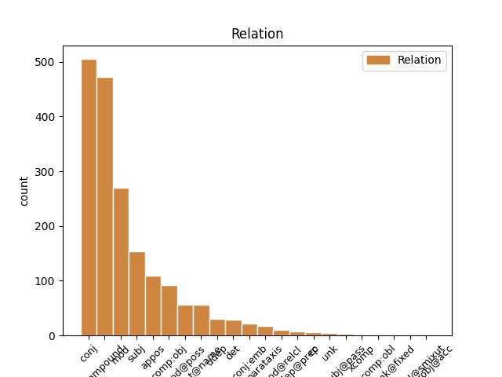
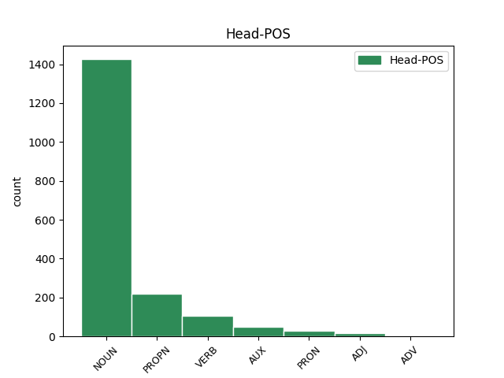
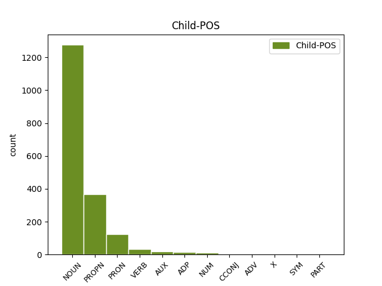

Distribution of features within this leaf



Agreement Rules sorted by frequency.
- When the dependent token is the conjunct(conj) of the head token, and the head token is NOUN and the dependent token is NOUN.
1 E _ _ _ _ 0 _ _ _
2 2000 _ _ _ _ 0 _ _ _
3 ne _ _ _ _ 0 _ _ _
4 oa _ _ _ _ 0 _ _ _
5 mui _ _ _ _ 0 _ _ _
6 komzet _ _ _ _ 0 _ _ _
7 nemet _ _ _ _ 0 _ _ _
8 gant _ _ _ _ 0 _ _ _
9 tri _ _ _ _ 0 _ _ _
10 damgomzer _ _ _ _ 0 _ _ _
11 n'anaveze _ _ _ _ 0 _ _ _
12 ken _ _ _ _ 0 _ _ _
13 nemet _ _ _ _ 0 _ _ _
14 un _ _ _ _ 0 _ _ _
15 nebeut _ _ _ _ 0 _ _ _
16 gerioù ger NOUN _ Gender=Masc|Number=Plur 0 _ _ _
17 ha _ _ _ _ 0 _ _ _
18 frazennoù _ NOUN _ Gender=Masc|Number=Plur 16 conj _ _
19 . _ _ _ _ 0 _ _ _
1 Diabarzh diabarzh NOUN _ Case=NomAcc|Gender=Masc|Number=Sing 0 _ _ _
2 moskeenn moskeenn NOUN _ Case=NomAcc|Gender=Masc|Number=Sing 1 compound _ _
3 ar _ _ _ _ 0 _ _ _
4 Sheikh _ _ _ _ 0 _ _ _
5 Lutfallah _ _ _ _ 0 _ _ _
6 , _ _ _ _ 0 _ _ _
7 Ispahan _ _ _ _ 0 _ _ _
8 . _ _ _ _ 0 _ _ _
1 Dindan dindan NOUN _ Case=NomAcc|Gender=Masc|Number=Sing 0 _ _ _
2 e _ _ _ _ 0 _ _ _
3 furm furm NOUN _ Case=NomAcc|Gender=Masc|Number=Sing 1 mod _ _
4 ordinal _ _ _ _ 0 _ _ _
5 é _ _ _ _ 0 _ _ _
6 an _ _ _ _ 0 _ _ _
7 drougsant _ _ _ _ 0 _ _ _
8 or _ _ _ _ 0 _ _ _
9 hleñved _ _ _ _ 0 _ _ _
10 - _ _ _ _ 0 _ _ _
11 spéred _ _ _ _ 0 _ _ _
12 hale _ _ _ _ 0 _ _ _
13 - _ _ _ _ 0 _ _ _
14 ouenn _ _ _ _ 0 _ _ _
15 , _ _ _ _ 0 _ _ _
16 pe _ _ _ _ 0 _ _ _
17 ablam _ _ _ _ 0 _ _ _
18 da _ _ _ _ 0 _ _ _
19 labéiou _ _ _ _ 0 _ _ _
20 ban _ _ _ _ 0 _ _ _
21 empenn _ _ _ _ 0 _ _ _
22 . _ _ _ _ 0 _ _ _
1 Unan _ _ _ _ 0 _ _ _
2 deus _ _ _ _ 0 _ _ _
3 merc'hed _ _ _ _ 0 _ _ _
4 ar _ _ _ _ 0 _ _ _
5 fur fur NOUN _ Case=NomAcc|Gender=Masc|Number=Sing 0 _ _ _
6 Nicolède Nicolède PROPN _ Case=NomAcc|Gender=Masc|Number=Sing 5 compound _ _
7 ( _ _ _ _ 0 _ _ _
8 ha _ _ _ _ 0 _ _ _
9 c'hoar _ _ _ _ 0 _ _ _
10 C'ian _ _ _ _ 0 _ _ _
11 neuze _ _ _ _ 0 _ _ _
12 ' _ _ _ _ 0 _ _ _
13 ta _ _ _ _ 0 _ _ _
14 ) _ _ _ _ 0 _ _ _
15 . _ _ _ _ 0 _ _ _
1 Dindan _ _ _ _ 0 _ _ _
2 ur _ _ _ _ 0 _ _ _
3 stumm _ _ _ _ 0 _ _ _
4 pur _ _ _ _ 0 _ _ _
5 e _ _ _ _ 0 _ _ _
6 c'hellont _ _ _ _ 0 _ _ _
7 bezañ _ _ _ _ 0 _ _ _
8 atomoù ato NOUN _ Gender=Masc|Number=Plur 0 _ _ _
9 en _ _ _ _ 0 _ _ _
10 o _ _ _ _ 0 _ _ _
11 unan _ _ _ _ 0 _ _ _
12 , _ _ _ _ 0 _ _ _
13 molekulennoù molekul NOUN _ Gender=Masc|Number=Plur 8 appos _ _
14 dezho _ _ _ _ 0 _ _ _
15 meur _ _ _ _ 0 _ _ _
16 a _ _ _ _ 0 _ _ _
17 atom _ _ _ _ 0 _ _ _
18 eus _ _ _ _ 0 _ _ _
19 ar _ _ _ _ 0 _ _ _
20 memes _ _ _ _ 0 _ _ _
21 elfenn _ _ _ _ 0 _ _ _
22 , _ _ _ _ 0 _ _ _
23 soludoù _ _ _ _ 0 _ _ _
24 kristalek _ _ _ _ 0 _ _ _
25 pe _ _ _ _ 0 _ _ _
26 amorfek _ _ _ _ 0 _ _ _
27 . _ _ _ _ 0 _ _ _
1 Abaoe _ _ _ _ 0 _ _ _
2 2003 _ _ _ _ 0 _ _ _
3 eo _ _ _ _ 0 _ _ _
4 Prezidant _ _ _ _ 0 _ _ _
5 Plaid Plaid PROPN _ Case=NomAcc|Gender=Masc|Number=Sing 0 _ _ _
6 Cymru Cymru PROPN _ Case=Gen|Gender=Masc|Number=Sing 5 flat@name _ _
7 . _ _ _ _ 0 _ _ _
1 O _ _ _ _ 0 _ _ _
2 heuliadenn _ _ _ _ 0 _ _ _
3 embannadur _ _ _ _ 0 _ _ _
4 a _ _ _ _ 0 _ _ _
5 zo _ _ _ _ 0 _ _ _
6 bet _ _ _ _ 0 _ _ _
7 Kinder Kind PROPN _ Case=Nom|Gender=Neut|Number=Plur 0 _ _ _
8 und- _ _ _ _ 0 _ _ _
9 Hausmärchen Hausmärchen PROPN _ Case=Nom|Gender=Neut|Number=Plur 7 conj _ _
10 e _ _ _ _ 0 _ _ _
11 didtl _ _ _ _ 0 _ _ _
12 . _ _ _ _ 0 _ _ _
1 Ha _ _ _ _ 0 _ _ _
2 pan _ _ _ _ 0 _ _ _
3 dheth _ _ _ _ 0 _ _ _
4 y _ _ _ _ 0 _ _ _
5 helgun _ _ _ _ 0 _ _ _
6 dhe _ _ _ _ 0 _ _ _
7 vyn vyn NOUN _ Case=NomAcc|Gender=Masc|Number=Sing 0 _ _ _
8 an _ _ _ _ 0 _ _ _
9 lanergh lanergh NOUN _ Case=NomAcc|Definite=Def|Gender=Masc|Number=Sing 7 comp:obj _ _
10 , _ _ _ _ 0 _ _ _
11 ef _ _ _ _ 0 _ _ _
12 a _ _ _ _ 0 _ _ _
13 welas _ _ _ _ 0 _ _ _
14 carow _ _ _ _ 0 _ _ _
15 arak _ _ _ _ 0 _ _ _
16 an _ _ _ _ 0 _ _ _
17 bagas _ _ _ _ 0 _ _ _
18 - _ _ _ _ 0 _ _ _
19 hel _ _ _ _ 0 _ _ _
20 aral _ _ _ _ 0 _ _ _
21 . _ _ _ _ 0 _ _ _
1 Dindan dindan NOUN _ Case=NomAcc|Gender=Masc|Number=Sing 5 subj _ _
2 e _ _ _ _ 0 _ _ _
3 furm _ _ _ _ 0 _ _ _
4 ordinal _ _ _ _ 0 _ _ _
5 é é AUX _ Gender=Masc|Number=Sing|Person=3 0 _ _ _
6 an _ _ _ _ 0 _ _ _
7 drougsant _ _ _ _ 0 _ _ _
8 or _ _ _ _ 0 _ _ _
9 hleñved _ _ _ _ 0 _ _ _
10 - _ _ _ _ 0 _ _ _
11 spéred _ _ _ _ 0 _ _ _
12 hale _ _ _ _ 0 _ _ _
13 - _ _ _ _ 0 _ _ _
14 ouenn _ _ _ _ 0 _ _ _
15 , _ _ _ _ 0 _ _ _
16 pe _ _ _ _ 0 _ _ _
17 ablam _ _ _ _ 0 _ _ _
18 da _ _ _ _ 0 _ _ _
19 labéiou _ _ _ _ 0 _ _ _
20 ban _ _ _ _ 0 _ _ _
21 empenn _ _ _ _ 0 _ _ _
22 . _ _ _ _ 0 _ _ _
1 Ur _ _ _ _ 0 _ _ _
2 preder _ _ _ _ 0 _ _ _
3 war _ _ _ _ 0 _ _ _
4 darempredoù _ _ _ _ 0 _ _ _
5 etre _ _ _ _ 0 _ _ _
6 an _ _ _ _ 0 _ _ _
7 dud _ _ _ _ 0 _ _ _
8 diwar _ _ _ _ 0 _ _ _
9 ar _ _ _ _ 0 _ _ _
10 rev _ _ _ _ 0 _ _ _
11 eo _ _ _ _ 0 _ _ _
12 teorienn _ NOUN _ Case=NomAcc|Gender=Masc|Number=Sing 0 _ _ _
13 ar _ _ _ _ 0 _ _ _
14 reizh _ NOUN _ Case=NomAcc|Definite=Def|Gender=Masc|Number=Sing 12 mod@poss _ _
15 . _ _ _ _ 0 _ _ _
1 War _ _ _ _ 0 _ _ _
2 aod _ _ _ _ 0 _ _ _
3 reter _ _ _ _ 0 _ _ _
4 ar _ _ _ _ 0 _ _ _
5 c'hevandir _ _ _ _ 0 _ _ _
6 - _ _ _ _ 0 _ _ _
7 se _ _ _ _ 0 _ _ _
8 eo is PRON _ Case=Abl|Gender=Masc|Number=Sing|Person=3|PronType=Prs 9 subj _ _
9 lec'hiet lec'hiet NOUN _ Case=NomAcc|Gender=Masc|Number=Sing 0 _ _ _
10 . _ _ _ _ 0 _ _ _
1 Evit _ _ _ _ 0 _ _ _
2 an _ _ _ _ 0 _ _ _
3 Don _ _ _ _ 0 _ _ _
4 e _ _ _ _ 0 _ _ _
5 kaver kaver NOUN _ Case=NomAcc|Gender=Masc|Number=Sing 0 _ _ _
6 ar _ _ _ _ 0 _ _ _
7 stumm _ _ _ _ 0 _ _ _
8 latin _ _ _ _ 0 _ _ _
9 Ultone Ultone PROPN _ Case=NomAcc|Gender=Masc|Number=Sing 5 mod _ _
10 e _ _ _ _ 0 _ _ _
11 kartennaoueg _ _ _ _ 0 _ _ _
12 abati _ _ _ _ 0 _ _ _
13 Redon _ _ _ _ 0 _ _ _
14 . _ _ _ _ 0 _ _ _
1 Kavout _ _ _ _ 0 _ _ _
2 a _ _ _ _ 0 _ _ _
3 reas rea VERB _ Gender=Masc|Number=Sing|Person=3|Tense=Past 0 _ _ _
4 e _ _ _ _ 0 _ _ _
5 labour labour NOUN _ Gender=Masc|Number=Sing 3 comp:obj _ _
6 kentañ _ _ _ _ 0 _ _ _
7 e _ _ _ _ 0 _ _ _
8 Combo _ _ _ _ 0 _ _ _
9 Latin _ _ _ _ 0 _ _ _
10 Jazz _ _ _ _ 0 _ _ _
11 Eddie _ _ _ _ 0 _ _ _
12 Bonnemere _ _ _ _ 0 _ _ _
13 . _ _ _ _ 0 _ _ _
1 Unan _ _ _ _ 0 _ _ _
2 deus _ _ _ _ 0 _ _ _
3 berzhioù _ NOUN _ Case=NomAcc|Gender=Masc|Number=Plur 0 _ _ _
4 brasañ _ _ _ _ 0 _ _ _
5 en _ _ _ _ 0 _ _ _
6 bed _ _ _ _ 0 _ _ _
7 ar _ _ _ _ 0 _ _ _
8 bannoù _ _ _ _ 0 _ _ _
9 - _ _ _ _ 0 _ _ _
10 treset _ _ _ _ 0 _ _ _
11 eo is PRON _ Case=Abl|Gender=Masc|Number=Sing|Person=3|PronType=Prs 3 mod _ _
12 . _ _ _ _ 0 _ _ _
1 N'eo _ _ _ _ 0 _ _ _
2 an _ _ _ _ 0 _ _ _
3 droidigezh droidigezh NOUN _ Case=NomAcc|Definite=Def|Gender=Masc|Number=Sing 8 subj _ _
4 e _ _ _ _ 0 _ _ _
5 brezhoneg _ _ _ _ 0 _ _ _
6 nemet _ _ _ _ 0 _ _ _
7 un _ _ _ _ 0 _ _ _
8 tostaat tostaat NOUN _ Case=NomAcc|Definite=Def|Gender=Masc|Number=Sing 0 _ _ _
9 . _ _ _ _ 0 _ _ _
1 Boikotet _ _ _ _ 0 _ _ _
2 e _ _ _ _ 0 _ _ _
3 voe voe VERB _ Gender=Masc|Number=Sing|Person=3|Tense=Past 0 _ _ _
4 an _ _ _ _ 0 _ _ _
5 dilennadegoù dilennade NOUN _ Case=NomAcc|Definite=Def|Gender=Masc|Number=Plur 3 subj _ _
6 gant _ _ _ _ 0 _ _ _
7 ouzhpenn _ _ _ _ 0 _ _ _
8 17 _ _ _ _ 0 _ _ _
9 emstriver _ _ _ _ 0 _ _ _
10 a _ _ _ _ 0 _ _ _
11 enebe _ _ _ _ 0 _ _ _
12 ouzh _ _ _ _ 0 _ _ _
13 Hamid _ _ _ _ 0 _ _ _
14 Karzai _ _ _ _ 0 _ _ _
15 , _ _ _ _ 0 _ _ _
16 rak _ _ _ _ 0 _ _ _
17 soñjal _ _ _ _ 0 _ _ _
18 a _ _ _ _ 0 _ _ _
19 rae _ _ _ _ 0 _ _ _
20 dezho _ _ _ _ 0 _ _ _
21 e _ _ _ _ 0 _ _ _
22 oa _ _ _ _ 0 _ _ _
23 flod _ _ _ _ 0 _ _ _
24 . _ _ _ _ 0 _ _ _
1 Diabarzh _ _ _ _ 0 _ _ _
2 moskeenn _ _ _ _ 0 _ _ _
3 ar _ _ _ _ 0 _ _ _
4 Sheikh Sheikh PROPN _ Case=NomAcc|Gender=Masc|Number=Sing 5 compound _ _
5 Lutfallah Lutfallah PROPN _ Case=NomAcc|Gender=Masc|Number=Sing 0 _ _ _
6 , _ _ _ _ 0 _ _ _
7 Ispahan _ _ _ _ 0 _ _ _
8 . _ _ _ _ 0 _ _ _
1 Diabarzh _ _ _ _ 0 _ _ _
2 moskeenn _ _ _ _ 0 _ _ _
3 ar _ _ _ _ 0 _ _ _
4 Sheikh _ _ _ _ 0 _ _ _
5 Lutfallah Lutfallah PROPN _ Case=NomAcc|Gender=Masc|Number=Sing 0 _ _ _
6 , _ _ _ _ 0 _ _ _
7 Ispahan Ispahan PROPN _ Case=NomAcc|Gender=Masc|Number=Sing 5 mod _ _
8 . _ _ _ _ 0 _ _ _
1 Doujet _ _ _ _ 0 _ _ _
2 meurbet meurbet NOUN _ Case=NomAcc|Gender=Masc|Number=Sing 0 _ _ _
3 eo is PRON _ Case=Abl|Gender=Masc|Number=Sing|Person=3|PronType=Prs 2 det _ _
4 ar _ _ _ _ 0 _ _ _
5 stêr _ _ _ _ 0 _ _ _
6 Teribe _ _ _ _ 0 _ _ _
7 ganto _ _ _ _ 0 _ _ _
8 . _ _ _ _ 0 _ _ _
1 Dùn _ _ _ _ 0 _ _ _
2 Èideann Èideann PROPN _ Case=NomAcc|Gender=Masc|Number=Sing 0 _ _ _
3 ( _ _ _ _ 0 _ _ _
4 gouezeleg gouezeleg NOUN _ Case=NomAcc|Gender=Masc|Number=Sing 2 mod _ _
5 Skos _ _ _ _ 0 _ _ _
6 ) _ _ _ _ 0 _ _ _
1 E _ _ _ _ 0 _ _ _
2 Flandrez _ _ _ _ 0 _ _ _
3 Frañs _ _ _ _ 0 _ _ _
4 en _ _ _ _ 0 _ _ _
5 em _ _ _ _ 0 _ _ _
6 astenn _ _ _ _ 0 _ _ _
7 plaenenn _ _ _ _ 0 _ _ _
8 al _ _ _ _ 0 _ _ _
9 Leie _ _ _ _ 0 _ _ _
10 , _ _ _ _ 0 _ _ _
11 ledan ledan NOUN _ Gender=Masc|Number=Sing 0 _ _ _
12 ha _ _ _ _ 0 _ _ _
13 plaen plaen NOUN _ Gender=Masc|Number=Sing 11 conj:emb _ _
14 . _ _ _ _ 0 _ _ _
1 Ar _ _ _ _ 0 _ _ _
2 Scottish _ _ _ _ 0 _ _ _
3 National _ _ _ _ 0 _ _ _
4 Party Party PROPN _ Case=NomAcc|Gender=Masc|Number=Sing 0 _ _ _
5 ( _ _ _ _ 0 _ _ _
6 Pàrtaidh pàrtaidh NOUN _ Case=NomAcc|Gender=Masc|Number=Sing 4 appos _ _
7 Nàiseanta _ _ _ _ 0 _ _ _
8 na _ _ _ _ 0 _ _ _
9 h _ _ _ _ 0 _ _ _
10 - _ _ _ _ 0 _ _ _
11 Alba _ _ _ _ 0 _ _ _
12 , _ _ _ _ 0 _ _ _
13 " _ _ _ _ 0 _ _ _
14 Strollad _ _ _ _ 0 _ _ _
15 Broadel _ _ _ _ 0 _ _ _
16 Skos _ _ _ _ 0 _ _ _
17 " _ _ _ _ 0 _ _ _
18 ) _ _ _ _ 0 _ _ _
19 a _ _ _ _ 0 _ _ _
20 zo _ _ _ _ 0 _ _ _
21 ur _ _ _ _ 0 _ _ _
22 strollad _ _ _ _ 0 _ _ _
23 politikel _ _ _ _ 0 _ _ _
24 eus _ _ _ _ 0 _ _ _
25 an _ _ _ _ 0 _ _ _
26 tu _ _ _ _ 0 _ _ _
27 - _ _ _ _ 0 _ _ _
28 kleiz _ _ _ _ 0 _ _ _
29 a _ _ _ _ 0 _ _ _
30 glask _ _ _ _ 0 _ _ _
31 gounit _ _ _ _ 0 _ _ _
32 frankiz _ _ _ _ 0 _ _ _
33 bro _ _ _ _ 0 _ _ _
34 - _ _ _ _ 0 _ _ _
35 Skos _ _ _ _ 0 _ _ _
36 . _ _ _ _ 0 _ _ _
1 Un _ _ _ _ 0 _ _ _
2 nevezc'her _ _ _ _ 0 _ _ _
3 eo is PRON _ Case=Abl|Gender=Masc|Number=Sing|Person=3|PronType=Prs 0 _ _ _
4 an _ _ _ _ 0 _ _ _
5 termen termen NOUN _ Case=NomAcc|Definite=Def|Gender=Masc|Number=Sing 3 subj _ _
6 treuzvaouez _ _ _ _ 0 _ _ _
7 bet _ _ _ _ 0 _ _ _
8 savet _ _ _ _ 0 _ _ _
9 diwar _ _ _ _ 0 _ _ _
10 ar _ _ _ _ 0 _ _ _
11 saozneg _ _ _ _ 0 _ _ _
12 transwoman _ _ _ _ 0 _ _ _
13 . _ _ _ _ 0 _ _ _
1 Ur _ _ _ _ 0 _ _ _
2 yezh _ _ _ _ 0 _ _ _
3 varv _ _ _ _ 0 _ _ _
4 an _ _ _ _ 0 _ _ _
5 hini hini NOUN _ Case=NomAcc|Definite=Def|Gender=Masc|Number=Sing 0 _ _ _
6 eo eo PRON _ Case=Abl|Gender=Masc|Number=Sing|Person=3|PronType=Prs 5 mod@poss _ _
7 , _ _ _ _ 0 _ _ _
8 aet _ _ _ _ 0 _ _ _
9 da _ _ _ _ 0 _ _ _
10 get _ _ _ _ 0 _ _ _
11 er _ _ _ _ 0 _ _ _
12 bloavezhioù _ _ _ _ 0 _ _ _
13 1950 _ _ _ _ 0 _ _ _
14 . _ _ _ _ 0 _ _ _
1 Mab _ _ _ _ 0 _ _ _
2 eo _ _ _ _ 0 _ _ _
3 da _ _ _ _ 0 _ _ _
4 Ouranos Ouranos PROPN _ Case=NomAcc|Gender=Masc|Number=Sing 0 _ _ _
5 , _ _ _ _ 0 _ _ _
6 an _ _ _ _ 0 _ _ _
7 Oabl Oabl PROPN _ Case=NomAcc|Gender=Masc|Number=Sing 4 appos _ _
8 , _ _ _ _ 0 _ _ _
9 ha _ _ _ _ 0 _ _ _
10 Gaia _ _ _ _ 0 _ _ _
11 , _ _ _ _ 0 _ _ _
12 an _ _ _ _ 0 _ _ _
13 Douar _ _ _ _ 0 _ _ _
14 . _ _ _ _ 0 _ _ _
1 E _ _ _ _ 0 _ _ _
2 1684 _ _ _ _ 0 _ _ _
3 e _ _ _ _ 0 _ _ _
4 yeas _ _ _ _ 0 _ _ _
5 da _ _ _ _ 0 _ _ _
6 eiler eiler NOUN _ Case=NomAcc|Gender=Masc|Number=Sing 0 _ _ _
7 mirour _ _ _ _ 0 _ _ _
8 an _ _ _ _ 0 _ _ _
9 Ashmolean _ _ _ _ 0 _ _ _
10 Museum _ _ _ _ 0 _ _ _
11 , _ _ _ _ 0 _ _ _
12 Robert Robert PROPN _ Case=NomAcc|Gender=Masc|Number=Sing 6 appos _ _
13 Plot _ _ _ _ 0 _ _ _
14 . _ _ _ _ 0 _ _ _
1 Hiiumaa _ _ _ _ 0 _ _ _
2 ( _ _ _ _ 0 _ _ _
3 svedeg _ _ _ _ 0 _ _ _
4 hag _ _ _ _ 0 _ _ _
5 alamaneg alamaneg NOUN _ Case=NomAcc|Gender=Masc|Number=Sing 0 _ _ _
6 Dagö _ _ _ _ 0 _ _ _
7 , _ _ _ _ 0 _ _ _
8 finneg _ _ _ _ 0 _ _ _
9 Hiidenmaa Hiidenmaa PROPN _ Case=NomAcc|Gender=Masc|Number=Sing 5 conj _ _
10 ) _ _ _ _ 0 _ _ _
11 eo _ _ _ _ 0 _ _ _
12 an _ _ _ _ 0 _ _ _
13 eil _ _ _ _ 0 _ _ _
14 enezenn _ _ _ _ 0 _ _ _
15 vrasañ _ _ _ _ 0 _ _ _
16 ( _ _ _ _ 0 _ _ _
17 989 _ _ _ _ 0 _ _ _
18 km² _ _ _ _ 0 _ _ _
19 ) _ _ _ _ 0 _ _ _
20 en _ _ _ _ 0 _ _ _
21 Estonia _ _ _ _ 0 _ _ _
22 . _ _ _ _ 0 _ _ _
1 Distaget distage VERB _ Gender=Masc|Number=Sing|VerbForm=Part 0 _ _ _
2 e _ _ _ _ 0 _ _ _
3 vez vez VERB _ Definite=Ind|Gender=Masc|Number=Sing 1 conj _ _
4 [ _ _ _ _ 0 _ _ _
5 ʃ _ _ _ _ 0 _ _ _
6 ] _ _ _ _ 0 _ _ _
7 pe _ _ _ _ 0 _ _ _
8 [ _ _ _ _ 0 _ _ _
9 ʂ _ _ _ _ 0 _ _ _
10 ] _ _ _ _ 0 _ _ _
11 e _ _ _ _ 0 _ _ _
12 ruseg _ _ _ _ 0 _ _ _
13 . _ _ _ _ 0 _ _ _
1 An _ _ _ _ 0 _ _ _
2 Hadean Hadean PROPN _ Case=NomAcc|Gender=Masc|Number=Sing 0 _ _ _
3 zo _ _ _ _ 0 _ _ _
4 an _ _ _ _ 0 _ _ _
5 eon eon NOUN _ Case=NomAcc|Gender=Masc|Number=Sing 2 conj _ _
6 douaroniel _ _ _ _ 0 _ _ _
7 zo _ _ _ _ 0 _ _ _
8 a _ _ _ _ 0 _ _ _
9 - _ _ _ _ 0 _ _ _
10 raok _ _ _ _ 0 _ _ _
11 an _ _ _ _ 0 _ _ _
12 Arkean _ _ _ _ 0 _ _ _
13 . _ _ _ _ 0 _ _ _
1 Mistral _ _ _ _ 0 _ _ _
2 a _ _ _ _ 0 _ _ _
3 gennig _ _ _ _ 0 _ _ _
4 dehé _ _ _ _ 0 _ _ _
5 an _ _ _ _ 0 _ _ _
6 hanù _ _ _ _ 0 _ _ _
7 « _ _ _ _ 0 _ _ _
8 felibres _ _ _ _ 0 _ _ _
9 » _ _ _ _ 0 _ _ _
10 , _ _ _ _ 0 _ _ _
11 deit _ _ _ _ 0 _ _ _
12 ag _ _ _ _ 0 _ _ _
13 ur _ _ _ _ 0 _ _ _
14 ganaouenn _ _ _ _ 0 _ _ _
15 goh _ _ _ _ 0 _ _ _
16 relijiel _ _ _ _ 0 _ _ _
17 ( _ _ _ _ 0 _ _ _
18 e _ _ _ _ 0 _ _ _
19 - _ _ _ _ 0 _ _ _
20 menn _ _ _ _ 0 _ _ _
21 ar _ _ _ _ 0 _ _ _
22 Verhez verhez NOUN _ Case=NomAcc|Gender=Masc|Number=Sing 0 _ _ _
23 Maria Maria PROPN _ Case=NomAcc|Gender=Masc|Number=Sing 22 flat@name _ _
24 a _ _ _ _ 0 _ _ _
25 zispleg _ _ _ _ 0 _ _ _
26 hi _ _ _ _ 0 _ _ _
27 en _ _ _ _ 0 _ _ _
28 - _ _ _ _ 0 _ _ _
29 des _ _ _ _ 0 _ _ _
30 kavet _ _ _ _ 0 _ _ _
31 e _ _ _ _ 0 _ _ _
32 mab _ _ _ _ 0 _ _ _
33 e _ _ _ _ 0 _ _ _
34 - _ _ _ _ 0 _ _ _
35 barh _ _ _ _ 0 _ _ _
36 an _ _ _ _ 0 _ _ _
37 tampl _ _ _ _ 0 _ _ _
38 « _ _ _ _ 0 _ _ _
39 é _ _ _ _ 0 _ _ _
40 - _ _ _ _ 0 _ _ _
41 mesk _ _ _ _ 0 _ _ _
42 ar _ _ _ _ 0 _ _ _
43 seih _ _ _ _ 0 _ _ _
44 felibres _ _ _ _ 0 _ _ _
45 ar _ _ _ _ 0 _ _ _
46 lézenn _ _ _ _ 0 _ _ _
47 » _ _ _ _ 0 _ _ _
48 ) _ _ _ _ 0 _ _ _
49 . _ _ _ _ 0 _ _ _
1 Mezh _ _ _ _ 0 _ _ _
2 a _ _ _ _ 0 _ _ _
3 vez _ _ _ _ 0 _ _ _
4 en _ _ _ _ 0 _ _ _
5 unan _ _ _ _ 0 _ _ _
6 bennak _ _ _ _ 0 _ _ _
7 e _ _ _ _ 0 _ _ _
8 daou daou NUM _ Gender=Masc|Number=Sing 9 mod _ _
9 zegouezh _ NOUN _ Gender=Masc|Number=Sing 0 _ _ _
10 peurvuiañ _ _ _ _ 0 _ _ _
11 : _ _ _ _ 0 _ _ _
1 Un _ _ _ _ 0 _ _ _
2 uhelder _ _ _ _ 0 _ _ _
3 a _ _ _ _ 0 _ _ _
4 120 _ _ _ _ 0 _ _ _
5 cm _ _ _ _ 0 _ _ _
6 en _ _ _ _ 0 _ _ _
7 deus _ _ _ _ 0 _ _ _
8 hag _ _ _ _ 0 _ _ _
9 ag _ _ _ _ 0 _ _ _
10 an _ _ _ _ 0 _ _ _
11 hevelep _ _ _ _ 0 _ _ _
12 ment _ _ _ _ 0 _ _ _
13 hag _ _ _ _ 0 _ _ _
14 ul _ _ _ _ 0 _ _ _
15 leon leon NOUN _ Case=NomAcc|Definite=Def|Gender=Masc|Number=Sing 0 _ _ _
16 bras _ _ _ _ 0 _ _ _
17 eo is PRON _ Case=Abl|Gender=Masc|Number=Sing|Person=3|PronType=Prs 15 compound _ _
18 . _ _ _ _ 0 _ _ _
1 Dizoloet _ _ _ _ 0 _ _ _
2 e _ _ _ _ 0 _ _ _
3 voe voe VERB _ Gender=Masc|Number=Sing|Person=3|Tense=Past 0 _ _ _
4 ar _ _ _ _ 0 _ _ _
5 yezh yezh NOUN _ Gender=Masc|Number=Sing 3 udep _ _
6 - _ _ _ _ 0 _ _ _
7 mañ _ _ _ _ 0 _ _ _
8 e _ _ _ _ 0 _ _ _
9 1956 _ _ _ _ 0 _ _ _
10 . _ _ _ _ 0 _ _ _
1 Ragenfrid Ragenfrid PROPN _ Case=NomAcc|Gender=Masc|Number=Sing 4 subj _ _
2 a _ _ _ _ 0 _ _ _
3 anavezas _ _ _ _ 0 _ _ _
4 galloud galloud NOUN _ Case=NomAcc|Gender=Masc|Number=Sing 0 _ _ _
5 Karl _ _ _ _ 0 _ _ _
6 . _ _ _ _ 0 _ _ _
1 Dindan _ _ _ _ 0 _ _ _
2 gwarez _ _ _ _ 0 _ _ _
3 e _ _ _ _ 0 _ _ _
4 aotrou _ _ _ _ 0 _ _ _
5 emañ _ _ _ _ 0 _ _ _
6 ar _ _ _ _ 0 _ _ _
7 gwaz _ _ _ _ 0 _ _ _
8 . _ _ _ _ 0 _ _ _
9 met _ _ _ _ 0 _ _ _
10 mar _ _ _ _ 0 _ _ _
11 deo _ _ _ _ 0 _ _ _
12 galloudus galloudus NOUN _ Case=NomAcc|Gender=Masc|Number=Sing 0 _ _ _
13 an _ _ _ _ 0 _ _ _
14 aotroù _ _ _ _ 0 _ _ _
15 eo is PRON _ Case=Abl|Gender=Masc|Number=Sing|Person=3|PronType=Prs 12 comp:obj _ _
16 ivez _ _ _ _ 0 _ _ _
17 abalamourt _ _ _ _ 0 _ _ _
18 d'an _ _ _ _ 0 _ _ _
19 niver _ _ _ _ 0 _ _ _
20 a _ _ _ _ 0 _ _ _
21 wazed _ _ _ _ 0 _ _ _
22 a _ _ _ _ 0 _ _ _
23 zo _ _ _ _ 0 _ _ _
24 dindanañ _ _ _ _ 0 _ _ _
25 , _ _ _ _ 0 _ _ _
26 d'o _ _ _ _ 0 _ _ _
27 lealded _ _ _ _ 0 _ _ _
28 , _ _ _ _ 0 _ _ _
29 ha _ _ _ _ 0 _ _ _
30 d'o _ _ _ _ 0 _ _ _
31 zamm _ _ _ _ 0 _ _ _
32 galloud _ _ _ _ 0 _ _ _
33 ivez _ _ _ _ 0 _ _ _
34 . _ _ _ _ 0 _ _ _
1 Kelennet _ _ _ _ 0 _ _ _
2 eo _ _ _ _ 0 _ _ _
3 en _ _ _ _ 0 _ _ _
4 un _ _ _ _ 0 _ _ _
5 nebeud _ _ _ _ 0 _ _ _
6 solioù sol NOUN _ Gender=Masc|Number=Plur 0 _ _ _
7 prevez prevez VERB _ Gender=Masc|Number=Plur|VerbForm=Part 6 mod _ _
8 en _ _ _ _ 0 _ _ _
9 derez _ _ _ _ 0 _ _ _
10 kentañ _ _ _ _ 0 _ _ _
11 . _ _ _ _ 0 _ _ _
1 Ar _ _ _ _ 0 _ _ _
2 c'hontrol _ _ _ _ 0 _ _ _
3 diouzh _ _ _ _ 0 _ _ _
4 ar _ _ _ _ 0 _ _ _
5 substrat _ _ _ _ 0 _ _ _
6 eo is PRON _ Case=Abl|Gender=Masc|Number=Sing|Person=3|PronType=Prs 8 cc _ _
7 ar _ _ _ _ 0 _ _ _
8 superstrat superstrat NOUN _ Case=NomAcc|Definite=Def|Gender=Masc|Number=Sing 0 _ _ _
9 . _ _ _ _ 0 _ _ _
1 Ragenfrid _ _ _ _ 0 _ _ _
2 a _ _ _ _ 0 _ _ _
3 anavezas _ _ _ _ 0 _ _ _
4 galloud galloud NOUN _ Case=NomAcc|Gender=Masc|Number=Sing 5 compound _ _
5 Karl Karl PROPN _ Case=NomAcc|Gender=Masc|Number=Sing 0 _ _ _
6 . _ _ _ _ 0 _ _ _
1 Diwezhatoc'h _ _ _ _ 0 _ _ _
2 e _ _ _ _ 0 _ _ _
3 voe _ _ _ _ 0 _ _ _
4 roet _ _ _ _ 0 _ _ _
5 ar _ _ _ _ 0 _ _ _
6 roched _ _ _ _ 0 _ _ _
7 gant _ _ _ _ 0 _ _ _
8 Deianeira _ _ _ _ 0 _ _ _
9 , _ _ _ _ 0 _ _ _
10 aon _ _ _ _ 0 _ _ _
11 ganti ganti NOUN _ Case=NomAcc|Definite=Def|Gender=Masc|Number=Sing 0 _ _ _
12 a _ _ _ _ 0 _ _ _
13 goll _ _ _ _ 0 _ _ _
14 he he AUX _ Gender=Masc|Number=Sing|Person=3 11 mod@relcl _ _
15 fried _ _ _ _ 0 _ _ _
16 , _ _ _ _ 0 _ _ _
17 aet _ _ _ _ 0 _ _ _
18 sot _ _ _ _ 0 _ _ _
19 gant _ _ _ _ 0 _ _ _
20 ar _ _ _ _ 0 _ _ _
21 garantez _ _ _ _ 0 _ _ _
22 ouzh _ _ _ _ 0 _ _ _
23 Iol _ _ _ _ 0 _ _ _
24 , _ _ _ _ 0 _ _ _
25 merc'h _ _ _ _ 0 _ _ _
26 ar _ _ _ _ 0 _ _ _
27 roue _ _ _ _ 0 _ _ _
28 Euritos _ _ _ _ 0 _ _ _
29 . _ _ _ _ 0 _ _ _
1 Ur _ _ _ _ 0 _ _ _
2 stêr stêr NOUN _ Gender=Masc|Number=Sing 0 _ _ _
3 eus _ _ _ _ 0 _ _ _
4 Bro _ _ _ _ 0 _ _ _
5 - _ _ _ _ 0 _ _ _
6 C'hall _ _ _ _ 0 _ _ _
7 eo is AUX _ Case=Abl|Gender=Masc|Number=Sing|Person=3|PronType=Prs 2 subj _ _
8 an _ _ _ _ 0 _ _ _
9 Ain _ _ _ _ 0 _ _ _
10 , _ _ _ _ 0 _ _ _
11 unan _ _ _ _ 0 _ _ _
12 eus _ _ _ _ 0 _ _ _
13 adstêrioù _ _ _ _ 0 _ _ _
14 ar _ _ _ _ 0 _ _ _
15 Roen _ _ _ _ 0 _ _ _
16 , _ _ _ _ 0 _ _ _
17 dezhi _ _ _ _ 0 _ _ _
18 195 _ _ _ _ 0 _ _ _
19 km _ _ _ _ 0 _ _ _
20 hed _ _ _ _ 0 _ _ _
21 . _ _ _ _ 0 _ _ _
1 Oadvezh oadvezh NOUN _ Case=NomAcc|Gender=Masc|Number=Sing 16 udep _ _
2 an _ _ _ _ 0 _ _ _
3 dinaozored _ _ _ _ 0 _ _ _
4 a _ _ _ _ 0 _ _ _
5 zo _ _ _ _ 0 _ _ _
6 unan _ _ _ _ 0 _ _ _
7 eus _ _ _ _ 0 _ _ _
8 anvioù _ _ _ _ 0 _ _ _
9 ar _ _ _ _ 0 _ _ _
10 Mezozoeg _ _ _ _ 0 _ _ _
11 hag _ _ _ _ 0 _ _ _
12 en _ _ _ _ 0 _ _ _
13 amzervezh _ _ _ _ 0 _ _ _
14 - _ _ _ _ 0 _ _ _
15 mañ _ _ _ _ 0 _ _ _
16 eo is AUX _ Case=Abl|Gender=Masc|Number=Sing|Person=3|PronType=Prs 0 _ _ _
17 bet _ _ _ _ 0 _ _ _
18 gwelet _ _ _ _ 0 _ _ _
19 diorroadur _ _ _ _ 0 _ _ _
20 al _ _ _ _ 0 _ _ _
21 laboused _ _ _ _ 0 _ _ _
22 kentañ _ _ _ _ 0 _ _ _
23 , _ _ _ _ 0 _ _ _
24 ar _ _ _ _ 0 _ _ _
25 bronnegeg _ _ _ _ 0 _ _ _
26 kentañ _ _ _ _ 0 _ _ _
27 hag _ _ _ _ 0 _ _ _
28 ar _ _ _ _ 0 _ _ _
29 plant _ _ _ _ 0 _ _ _
30 angiosperek _ _ _ _ 0 _ _ _
31 . _ _ _ _ 0 _ _ _
1 Skrivet _ _ _ _ 0 _ _ _
2 e _ _ _ _ 0 _ _ _
3 vez _ _ _ _ 0 _ _ _
4 gant _ _ _ _ 0 _ _ _
5 al _ _ _ _ 0 _ _ _
6 lizherenneg _ _ _ _ 0 _ _ _
7 kirillek _ _ _ _ 0 _ _ _
8 gant _ _ _ _ 0 _ _ _
9 un _ _ _ _ 0 _ _ _
10 nebeud nebeud NOUN _ Gender=Masc|Number=Sing 11 det _ _
11 lizherennoù lizheren NOUN _ Gender=Masc|Number=Plur 0 _ _ _
12 ispisial _ _ _ _ 0 _ _ _
13 ouzhpenn _ _ _ _ 0 _ _ _
14 evit _ _ _ _ 0 _ _ _
15 sonioù _ _ _ _ 0 _ _ _
16 na _ _ _ _ 0 _ _ _
17 vezont _ _ _ _ 0 _ _ _
18 ket _ _ _ _ 0 _ _ _
19 kavet _ _ _ _ 0 _ _ _
20 er _ _ _ _ 0 _ _ _
21 rusianeg _ _ _ _ 0 _ _ _
22 : _ _ _ _ 0 _ _ _
1 Degemeret _ _ _ _ 0 _ _ _
2 al _ _ _ _ 0 _ _ _
3 lizherenn _ _ _ _ 0 _ _ _
4 vihan _ _ _ _ 0 _ _ _
5 l _ _ _ _ 0 _ _ _
6 e _ _ _ _ 0 _ _ _
7 - _ _ _ _ 0 _ _ _
8 giz _ _ _ _ 0 _ _ _
9 simbol simbol NOUN _ Gender=Masc|Number=Sing|Shared=Yes 0 _ _ _
10 al al ADP _ AdpType=Preppron|Gender=Masc|Number=Sing 9 udep _ _
11 litr _ _ _ _ 0 _ _ _
12 . _ _ _ _ 0 _ _ _
1 Aradennad _ _ _ _ 0 _ _ _
2 ar _ _ _ _ 0 _ _ _
3 C'haokaz C'haokaz PROPN _ Case=NomAcc|Gender=Masc|Number=Sing 0 _ _ _
4 Bihan bihan NOUN _ Case=Gen|Gender=Masc|Number=Sing 3 flat@name _ _
5 a _ _ _ _ 0 _ _ _
6 zo _ _ _ _ 0 _ _ _
7 kenaozet _ _ _ _ 0 _ _ _
8 eus _ _ _ _ 0 _ _ _
9 aradennad _ _ _ _ 0 _ _ _
10 bihanoc'h _ _ _ _ 0 _ _ _
11 , _ _ _ _ 0 _ _ _
12 tanveneziek _ _ _ _ 0 _ _ _
13 o _ _ _ _ 0 _ _ _
14 orin _ _ _ _ 0 _ _ _
15 ar _ _ _ _ 0 _ _ _
16 peurliesañ _ _ _ _ 0 _ _ _
17 , _ _ _ _ 0 _ _ _
18 liammet _ _ _ _ 0 _ _ _
19 an _ _ _ _ 0 _ _ _
20 eil _ _ _ _ 0 _ _ _
21 ouzh _ _ _ _ 0 _ _ _
22 an _ _ _ _ 0 _ _ _
23 eben _ _ _ _ 0 _ _ _
24 . _ _ _ _ 0 _ _ _
1 Bannieloù bannie NOUN _ Case=NomAcc|Gender=Masc|Number=Plur 0 _ _ _
2 kozh _ _ _ _ 0 _ _ _
3 Montenegro _ _ _ _ 0 _ _ _
4 a _ _ _ _ 0 _ _ _
5 oa _ _ _ _ 0 _ _ _
6 diazezet _ _ _ _ 0 _ _ _
7 war _ _ _ _ 0 _ _ _
8 an _ _ _ _ 0 _ _ _
9 triliv _ _ _ _ 0 _ _ _
10 a _ _ _ _ 0 _ _ _
11 - _ _ _ _ 0 _ _ _
12 blaen _ _ _ _ 0 _ _ _
13 ruz _ _ _ _ 0 _ _ _
14 - _ _ _ _ 0 _ _ _
15 glas _ _ _ _ 0 _ _ _
16 - _ _ _ _ 0 _ _ _
17 gwenn _ _ _ _ 0 _ _ _
18 ( _ _ _ _ 0 _ _ _
19 arouez arouez NOUN _ Case=NomAcc|Gender=Masc|Number=Sing 1 parataxis _ _
20 unanded _ _ _ _ 0 _ _ _
21 etre _ _ _ _ 0 _ _ _
22 ar _ _ _ _ 0 _ _ _
23 Slaved _ _ _ _ 0 _ _ _
24 , _ _ _ _ 0 _ _ _
25 an _ _ _ _ 0 _ _ _
26 arliv _ _ _ _ 0 _ _ _
27 sklaer _ _ _ _ 0 _ _ _
28 eus _ _ _ _ 0 _ _ _
29 ar _ _ _ _ 0 _ _ _
30 glas _ _ _ _ 0 _ _ _
31 a _ _ _ _ 0 _ _ _
32 oa _ _ _ _ 0 _ _ _
33 hini _ _ _ _ 0 _ _ _
34 ar _ _ _ _ 0 _ _ _
35 gwiskamantoù _ _ _ _ 0 _ _ _
36 hengounel _ _ _ _ 0 _ _ _
37 ) _ _ _ _ 0 _ _ _
38 . _ _ _ _ 0 _ _ _
1 Implijet _ _ _ _ 0 _ _ _
2 e _ _ _ _ 0 _ _ _
3 voe _ _ _ _ 0 _ _ _
4 al al ADP _ Gender=Masc|Number=Sing|Poss=Yes|PronType=Prs 5 det _ _
5 lizherenneg lizherenneg NOUN _ Gender=Masc|Number=Sing 0 _ _ _
6 kentañ _ _ _ _ 0 _ _ _
7 en _ _ _ _ 0 _ _ _
8 Egipt _ _ _ _ 0 _ _ _
9 e _ _ _ _ 0 _ _ _
10 - _ _ _ _ 0 _ _ _
11 tro _ _ _ _ 0 _ _ _
12 2000 _ _ _ _ 0 _ _ _
13 a _ _ _ _ 0 _ _ _
14 - _ _ _ _ 0 _ _ _
15 raok _ _ _ _ 0 _ _ _
16 Jezuz _ _ _ _ 0 _ _ _
17 . _ _ _ _ 0 _ _ _
1 Stag _ VERB _ Gender=Masc|HebBinyan=PAAL|Number=Sing|Person=1,2,3|VerbForm=Part|Voice=Act 0 _ _ _
2 eo is PRON _ Case=Abl|Gender=Masc|Number=Sing|Person=3|PronType=Prs 1 subj _ _
3 ouzh _ _ _ _ 0 _ _ _
4 kêr _ _ _ _ 0 _ _ _
5 Wrecsam _ _ _ _ 0 _ _ _
6 bremañ _ _ _ _ 0 _ _ _
7 , _ _ _ _ 0 _ _ _
1 Testenn testenn NOUN _ Definite=Ind|Gender=Neut|Number=Plur 0 _ _ _
2 skrivet skrive VERB _ Definite=Ind|Gender=Neut|Number=Sing|VerbForm=Part 1 mod@relcl _ _
3 er _ _ _ _ 0 _ _ _
4 stil _ _ _ _ 0 _ _ _
5 " _ _ _ _ 0 _ _ _
6 dibenn _ _ _ _ 0 _ _ _
7 " _ _ _ _ 0 _ _ _
8 ( _ _ _ _ 0 _ _ _
9 Dbu _ _ _ _ 0 _ _ _
10 - _ _ _ _ 0 _ _ _
11 med _ _ _ _ 0 _ _ _
12 ) _ _ _ _ 0 _ _ _
13 Testenn _ _ _ _ 0 _ _ _
14 skrivet _ _ _ _ 0 _ _ _
15 er _ _ _ _ 0 _ _ _
16 stil _ _ _ _ 0 _ _ _
17 " _ _ _ _ 0 _ _ _
18 dibenn _ _ _ _ 0 _ _ _
19 " _ _ _ _ 0 _ _ _
20 ( _ _ _ _ 0 _ _ _
21 Dbu _ _ _ _ 0 _ _ _
22 - _ _ _ _ 0 _ _ _
23 med _ _ _ _ 0 _ _ _
24 ) _ _ _ _ 0 _ _ _
1 Ma’z _ _ _ _ 0 _ _ _
2 eas _ _ _ _ 0 _ _ _
3 foll foll NOUN _ Case=NomAcc|Gender=Masc|Number=Sing 0 _ _ _
4 Erigone Erigone PROPN _ Case=NomAcc|Gender=Masc|Number=Sing 3 comp:obj _ _
5 gant _ _ _ _ 0 _ _ _
6 ar _ _ _ _ 0 _ _ _
7 glac’har _ _ _ _ 0 _ _ _
8 hag _ _ _ _ 0 _ _ _
9 ez _ _ _ _ 0 _ _ _
10 eas _ _ _ _ 0 _ _ _
11 d’en _ _ _ _ 0 _ _ _
12 em _ _ _ _ 0 _ _ _
13 grougañ _ _ _ _ 0 _ _ _
14 . _ _ _ _ 0 _ _ _
1 Johnny Johnny PROPN _ Case=NomAcc|Gender=Masc|Number=Sing 0 _ _ _
2 Depp _ _ _ _ 0 _ _ _
3 eo is ADP _ Gender=Masc|Number=Sing|Person=3 1 udep _ _
4 ar _ _ _ _ 0 _ _ _
5 c’hoari _ _ _ _ 0 _ _ _
6 an _ _ _ _ 0 _ _ _
7 haroz _ _ _ _ 0 _ _ _
8 . _ _ _ _ 0 _ _ _
1 Loch Loch PROPN _ Case=NomAcc|Gender=Masc|Number=Sing 11 subj _ _
2 nEathach _ _ _ _ 0 _ _ _
3 ( _ _ _ _ 0 _ _ _
4 Lough _ _ _ _ 0 _ _ _
5 Neagh _ _ _ _ 0 _ _ _
6 ) _ _ _ _ 0 _ _ _
7 ( _ _ _ _ 0 _ _ _
8 388 _ _ _ _ 0 _ _ _
9 km² _ _ _ _ 0 _ _ _
10 ) _ _ _ _ 0 _ _ _
11 eo is AUX _ Case=Abl|Gender=Masc|Number=Sing|Person=3|PronType=Prs 0 _ _ _
12 al _ _ _ _ 0 _ _ _
13 lenn _ _ _ _ 0 _ _ _
14 vrasañ _ _ _ _ 0 _ _ _
15 eus _ _ _ _ 0 _ _ _
16 an _ _ _ _ 0 _ _ _
17 inizi _ _ _ _ 0 _ _ _
18 breizhveuriat _ _ _ _ 0 _ _ _
19 . _ _ _ _ 0 _ _ _
1 Skrivagner _ _ _ _ 0 _ _ _
2 gall _ _ _ _ 0 _ _ _
3 ha _ _ _ _ 0 _ _ _
4 gallek gallek ADJ _ Definite=Ind|Gender=Masc|Number=Sing 0 _ _ _
5 , _ _ _ _ 0 _ _ _
6 barzh barzh NOUN _ Definite=Ind|Gender=Masc|Number=Sing 4 conj _ _
7 , _ _ _ _ 0 _ _ _
8 aktour _ _ _ _ 0 _ _ _
9 , _ _ _ _ 0 _ _ _
10 leurennour _ _ _ _ 0 _ _ _
11 . _ _ _ _ 0 _ _ _
1 Notenn _ _ _ _ 0 _ _ _
2 1 _ _ _ _ 0 _ _ _
3 : _ _ _ _ 0 _ _ _
4 Ezel ezel NOUN _ Case=NomAcc|Gender=Masc|Number=Sing 0 _ _ _
5 eus eus ADP _ Case=NomAcc|Gender=Masc|Number=Sing 4 compound _ _
6 ar _ _ _ _ 0 _ _ _
7 Pemp _ _ _ _ 0 _ _ _
8 poblad _ _ _ _ 0 _ _ _
9 orin _ _ _ _ 0 _ _ _
10 ( _ _ _ _ 0 _ _ _
11 eus _ _ _ _ 0 _ _ _
12 ar _ _ _ _ 0 _ _ _
13 c'hornaoueg _ _ _ _ 0 _ _ _
14 d'ar _ _ _ _ 0 _ _ _
15 reter _ _ _ _ 0 _ _ _
16 ) _ _ _ _ 0 _ _ _
1 Ur _ _ _ _ 0 _ _ _
2 wech _ _ _ _ 0 _ _ _
3 gwelet _ _ _ _ 0 _ _ _
4 ne _ _ _ _ 0 _ _ _
5 oa _ _ _ _ 0 _ _ _
6 ket _ _ _ _ 0 _ _ _
7 didrec’hus _ _ _ _ 0 _ _ _
8 an _ _ _ _ 0 _ _ _
9 impalaeriez _ _ _ _ 0 _ _ _
10 « _ _ _ _ 0 _ _ _
11 santel _ _ _ _ 0 _ _ _
12 » _ _ _ _ 0 _ _ _
13 ez _ _ _ _ 0 _ _ _
14 eo _ _ _ _ 0 _ _ _
15 savet _ _ _ _ 0 _ _ _
16 ar _ _ _ _ 0 _ _ _
17 soñj soñj NOUN _ Case=NomAcc|Definite=Def|Gender=Masc|Number=Sing 18 comp:obj _ _
18 ennañ enn PRON _ Gender=Masc|Number=Sing|Person=3 0 _ _ _
19 e _ _ _ _ 0 _ _ _
20 oa _ _ _ _ 0 _ _ _
21 tu _ _ _ _ 0 _ _ _
22 da _ _ _ _ 0 _ _ _
23 gemm _ _ _ _ 0 _ _ _
24 endroadur _ _ _ _ 0 _ _ _
25 ar _ _ _ _ 0 _ _ _
26 bed _ _ _ _ 0 _ _ _
27 . _ _ _ _ 0 _ _ _
1 Gant _ _ _ _ 0 _ _ _
2 al _ _ _ _ 0 _ _ _
3 levr _ _ _ _ 0 _ _ _
4 - _ _ _ _ 0 _ _ _
5 se _ _ _ _ 0 _ _ _
6 eo is AUX _ Case=Abl|Gender=Masc|Number=Sing|Person=3|PronType=Prs 0 _ _ _
7 bet _ _ _ _ 0 _ _ _
8 brudet _ _ _ _ 0 _ _ _
9 dre _ _ _ _ 0 _ _ _
10 Europa _ _ _ _ 0 _ _ _
11 mojennoù mojenn NOUN _ Case=NomAcc|Gender=Masc|Number=Plur 6 subj@pass _ _
12 ar _ _ _ _ 0 _ _ _
13 roue _ _ _ _ 0 _ _ _
14 Arzhur _ _ _ _ 0 _ _ _
15 ha _ _ _ _ 0 _ _ _
16 marc'hegerion _ _ _ _ 0 _ _ _
17 an _ _ _ _ 0 _ _ _
18 Daol _ _ _ _ 0 _ _ _
19 Grenn _ _ _ _ 0 _ _ _
20 . _ _ _ _ 0 _ _ _
1 Dic'hallus Dic'hallus PROPN _ Case=NomAcc|Gender=Masc|Number=Sing 2 subj _ _
2 eo is PRON _ Case=Abl|Gender=Masc|Number=Sing|Person=3|PronType=Prs 0 _ _ _
3 kontañ _ _ _ _ 0 _ _ _
4 e _ _ _ _ 0 _ _ _
5 holl _ _ _ _ 0 _ _ _
6 anvioù _ _ _ _ 0 _ _ _
7 faos _ _ _ _ 0 _ _ _
8 : _ _ _ _ 0 _ _ _
9 ne _ _ _ _ 0 _ _ _
10 gemeras _ _ _ _ 0 _ _ _
11 an _ _ _ _ 0 _ _ _
12 anv _ _ _ _ 0 _ _ _
13 HO _ _ _ _ 0 _ _ _
14 CHI _ _ _ _ 0 _ _ _
15 MIN _ _ _ _ 0 _ _ _
16 - _ _ _ _ 0 _ _ _
17 " _ _ _ _ 0 _ _ _
18 an _ _ _ _ 0 _ _ _
19 hini _ _ _ _ 0 _ _ _
20 a _ _ _ _ 0 _ _ _
21 ro _ _ _ _ 0 _ _ _
22 sklêrijenn _ _ _ _ 0 _ _ _
23 " _ _ _ _ 0 _ _ _
24 nemet _ _ _ _ 0 _ _ _
25 e _ _ _ _ 0 _ _ _
26 1946 _ _ _ _ 0 _ _ _
27 pa _ _ _ _ 0 _ _ _
28 grogas _ _ _ _ 0 _ _ _
29 ar _ _ _ _ 0 _ _ _
30 gouvrezel _ _ _ _ 0 _ _ _
31 a _ _ _ _ 0 _ _ _
32 - _ _ _ _ 0 _ _ _
33 enep _ _ _ _ 0 _ _ _
34 d'ar _ _ _ _ 0 _ _ _
35 C'hallaoued _ _ _ _ 0 _ _ _
36 . _ _ _ _ 0 _ _ _
1 Evel _ _ _ _ 0 _ _ _
2 - _ _ _ _ 0 _ _ _
3 just _ _ _ _ 0 _ _ _
4 ez _ _ _ _ 0 _ _ _
5 eo is VERB _ Case=Abl|Gender=Masc|Number=Sing|Person=3|PronType=Prs 0 _ _ _
6 tremen _ _ _ _ 0 _ _ _
7 rouez _ _ _ _ 0 _ _ _
8 al al ADP _ AdpType=Preppron|Gender=Masc|Number=Sing 5 udep _ _
9 lun _ _ _ _ 0 _ _ _
10 - _ _ _ _ 0 _ _ _
11 se _ _ _ _ 0 _ _ _
12 . _ _ _ _ 0 _ _ _
1 E _ _ _ _ 0 _ _ _
2 kreiz _ _ _ _ 0 _ _ _
3 ar _ _ _ _ 0 _ _ _
4 c'helc'hiad _ _ _ _ 0 _ _ _
5 annezus _ _ _ _ 0 _ _ _
6 emañ _ _ _ _ 0 _ _ _
7 ha _ _ _ _ 0 _ _ _
8 posubl _ _ _ _ 0 _ _ _
9 eo is PRON _ Case=Abl|Gender=Masc|Number=Sing|Person=3|PronType=Prs 11 mod _ _
10 ez _ _ _ _ 0 _ _ _
11 eus eus VERB _ Gender=Masc|Number=Sing|Person=3|Polarity=Pos|Tense=Past|VerbType=Cop 0 _ _ _
12 dour _ _ _ _ 0 _ _ _
13 liñvel _ _ _ _ 0 _ _ _
14 war _ _ _ _ 0 _ _ _
15 unan _ _ _ _ 0 _ _ _
16 eus _ _ _ _ 0 _ _ _
17 he _ _ _ _ 0 _ _ _
18 loarennoù _ _ _ _ 0 _ _ _
19 . _ _ _ _ 0 _ _ _
1 Akwitania Akwitania PROPN _ Case=Nom|Gender=Neut|Number=Plur 0 _ _ _
2 a _ _ _ _ 0 _ _ _
3 zo zo ADV _ Case=Nom|Gender=Neut|Number=Plur 1 conj _ _
4 : _ _ _ _ 0 _ _ _
1 Unan _ _ _ _ 0 _ _ _
2 eus eus PRON _ Case=NomAcc|Gender=Masc|Number=Sing 0 _ _ _
3 ar _ _ _ _ 0 _ _ _
4 sultaned _ _ _ _ 0 _ _ _
5 hag _ _ _ _ 0 _ _ _
6 impalaerien _ _ _ _ 0 _ _ _
7 otoman _ _ _ _ 0 _ _ _
8 galloudusañ _ _ _ _ 0 _ _ _
9 ha _ _ _ _ 0 _ _ _
10 lufrusañ _ _ _ _ 0 _ _ _
11 eo is PRON _ Gender=Masc|Number=Sing|Person=3 2 subj _ _
12 bet _ _ _ _ 0 _ _ _
13 Suleiman _ _ _ _ 0 _ _ _
14 Iañ _ _ _ _ 0 _ _ _
15 , _ _ _ _ 0 _ _ _
16 lesanvet _ _ _ _ 0 _ _ _
17 ar _ _ _ _ 0 _ _ _
18 Meurdezus _ _ _ _ 0 _ _ _
19 . _ _ _ _ 0 _ _ _
1 Sant Sant PROPN _ Case=NomAcc|Gender=Masc|Number=Sing 0 _ _ _
2 - _ _ _ _ 0 _ _ _
3 Brieg _ _ _ _ 0 _ _ _
4 eo is PRON _ Case=Abl|Gender=Masc|Number=Sing|Person=3|PronType=Prs 1 flat@name _ _
5 ar _ _ _ _ 0 _ _ _
6 pennlec'h _ _ _ _ 0 _ _ _
7 anezhañ _ _ _ _ 0 _ _ _
8 . _ _ _ _ 0 _ _ _
1 An _ _ _ _ 0 _ _ _
2 hini _ _ _ _ 0 _ _ _
3 gentañ _ _ _ _ 0 _ _ _
4 a _ _ _ _ 0 _ _ _
5 tizkouez _ _ _ _ 0 _ _ _
6 un _ _ _ _ 0 _ _ _
7 denelezh _ _ _ _ 0 _ _ _
8 nammet _ _ _ _ 0 _ _ _
9 gant _ _ _ _ 0 _ _ _
10 un _ _ _ _ 0 _ _ _
11 diouer _ _ _ _ 0 _ _ _
12 a _ _ _ _ 0 _ _ _
13 deknologiezh _ _ _ _ 0 _ _ _
14 , _ _ _ _ 0 _ _ _
15 an _ _ _ _ 0 _ _ _
16 eil _ ADJ _ Case=NomAcc|Definite=Def|Gender=Masc|Number=Sing 0 _ _ _
17 un _ _ _ _ 0 _ _ _
18 denelezh denelezh NOUN _ Case=NomAcc|Definite=Def|Gender=Masc|Number=Sing 16 comp:obj _ _
19 beuzet _ _ _ _ 0 _ _ _
20 ha _ _ _ _ 0 _ _ _
21 tost _ _ _ _ 0 _ _ _
22 kollet _ _ _ _ 0 _ _ _
23 gantañ _ _ _ _ 0 _ _ _
24 e _ _ _ _ 0 _ _ _
25 zenelezh _ _ _ _ 0 _ _ _
26 gant _ _ _ _ 0 _ _ _
27 ur _ _ _ _ 0 _ _ _
28 re _ _ _ _ 0 _ _ _
29 a _ _ _ _ 0 _ _ _
30 deknologiezh _ _ _ _ 0 _ _ _
31 , _ _ _ _ 0 _ _ _
32 an _ _ _ _ 0 _ _ _
33 trede _ _ _ _ 0 _ _ _
34 ur _ _ _ _ 0 _ _ _
35 Bed _ _ _ _ 0 _ _ _
36 a _ _ _ _ 0 _ _ _
37 ya _ _ _ _ 0 _ _ _
38 en _ _ _ _ 0 _ _ _
39 dro _ _ _ _ 0 _ _ _
40 , _ _ _ _ 0 _ _ _
41 e _ _ _ _ 0 _ _ _
42 lec'h _ _ _ _ 0 _ _ _
43 ma _ _ _ _ 0 _ _ _
44 c'heller _ _ _ _ 0 _ _ _
45 bevañ _ _ _ _ 0 _ _ _
46 , _ _ _ _ 0 _ _ _
47 etre _ _ _ _ 0 _ _ _
48 an _ _ _ _ 0 _ _ _
49 daou _ _ _ _ 0 _ _ _
50 Bed _ _ _ _ 0 _ _ _
51 all _ _ _ _ 0 _ _ _
52 . _ _ _ _ 0 _ _ _
1 Brudet brudet ADJ _ Gender=Masc|Number=Sing 0 _ _ _
2 eo is PRON _ Case=Abl|Gender=Masc|Number=Sing|Person=3|PronType=Prs 1 subj _ _
3 e _ _ _ _ 0 _ _ _
4 skridoù _ _ _ _ 0 _ _ _
5 e _ _ _ _ 0 _ _ _
6 Danmark _ _ _ _ 0 _ _ _
7 , _ _ _ _ 0 _ _ _
8 skridoù _ _ _ _ 0 _ _ _
9 komz _ _ _ _ 0 _ _ _
10 - _ _ _ _ 0 _ _ _
11 plaen _ _ _ _ 0 _ _ _
12 evel _ _ _ _ 0 _ _ _
13 e _ _ _ _ 0 _ _ _
14 romant _ _ _ _ 0 _ _ _
15 istorel _ _ _ _ 0 _ _ _
16 Kongens _ _ _ _ 0 _ _ _
17 Fald _ _ _ _ 0 _ _ _
18 ( _ _ _ _ 0 _ _ _
19 kouezhadenn _ _ _ _ 0 _ _ _
20 ar _ _ _ _ 0 _ _ _
21 roue _ _ _ _ 0 _ _ _
22 ) _ _ _ _ 0 _ _ _
23 , _ _ _ _ 0 _ _ _
24 pe _ _ _ _ 0 _ _ _
25 barzhonegoù _ _ _ _ 0 _ _ _
26 ( _ _ _ _ 0 _ _ _
27 Digte _ _ _ _ 0 _ _ _
28 1906 _ _ _ _ 0 _ _ _
29 ) _ _ _ _ 0 _ _ _
30 . _ _ _ _ 0 _ _ _
1 Penn penn NOUN _ Case=NomAcc|Gender=Masc|Number=Sing 0 _ _ _
2 pellañ _ _ _ _ 0 _ _ _
3 ar _ _ _ _ 0 _ _ _
4 Menez _ _ _ _ 0 _ _ _
5 Du _ _ _ _ 0 _ _ _
6 eo is PRON _ Case=Abl|Gender=Masc|Number=Sing|Person=3|PronType=Prs 1 udep _ _
7 . _ _ _ _ 0 _ _ _
1 Krouet _ _ _ _ 0 _ _ _
2 e _ _ _ _ 0 _ _ _
3 voe _ VERB _ Gender=Masc|Number=Sing|Person=3|Tense=Past 0 _ _ _
4 Göteborg _ _ _ _ 0 _ _ _
5 e _ _ _ _ 0 _ _ _
6 1621 _ _ _ _ 0 _ _ _
7 gant _ _ _ _ 0 _ _ _
8 ar _ _ _ _ 0 _ _ _
9 roue _ _ _ _ 0 _ _ _
10 Gustaf _ _ _ _ 0 _ _ _
11 II _ _ _ _ 0 _ _ _
12 Adolf _ _ _ _ 0 _ _ _
13 , _ _ _ _ 0 _ _ _
14 a _ _ _ _ 0 _ _ _
15 soñje _ _ _ _ 0 _ _ _
16 dezhañ _ _ _ _ 0 _ _ _
17 e _ _ _ _ 0 _ _ _
18 oa _ _ _ _ 0 _ _ _
19 pouezus _ _ _ _ 0 _ _ _
20 da _ _ _ _ 0 _ _ _
21 Sveden _ _ _ _ 0 _ _ _
22 kaout _ _ _ _ 0 _ _ _
23 ur _ _ _ _ 0 _ _ _
24 porzh _ _ _ _ 0 _ _ _
25 bras _ _ _ _ 0 _ _ _
26 war _ _ _ _ 0 _ _ _
27 aod _ _ _ _ 0 _ _ _
28 kornaoueg _ _ _ _ 0 _ _ _
29 ar _ _ _ _ 0 _ _ _
30 vro _ _ _ _ 0 _ _ _
31 , _ _ _ _ 0 _ _ _
32 etre _ _ _ _ 0 _ _ _
33 Norvegia _ _ _ _ 0 _ _ _
34 ha _ _ _ _ 0 _ _ _
35 Danmark _ _ _ _ 0 _ _ _
36 ( _ _ _ _ 0 _ _ _
37 stag _ VERB _ Gender=Masc|Number=Sing|Person=3|Tense=Past 3 parataxis _ _
38 e _ _ _ _ 0 _ _ _
39 oa _ _ _ _ 0 _ _ _
40 proviñsoù _ _ _ _ 0 _ _ _
41 kreisteiz _ _ _ _ 0 _ _ _
42 al _ _ _ _ 0 _ _ _
43 ledenez _ _ _ _ 0 _ _ _
44 ouzh _ _ _ _ 0 _ _ _
45 Danmark _ _ _ _ 0 _ _ _
46 en _ _ _ _ 0 _ _ _
47 amzer _ _ _ _ 0 _ _ _
48 - _ _ _ _ 0 _ _ _
49 se _ _ _ _ 0 _ _ _
50 ) _ _ _ _ 0 _ _ _
51 . _ _ _ _ 0 _ _ _
1 Poltred _ _ _ _ 0 _ _ _
2 un un CCONJ _ Gender=Masc|Number=Sing|PronType=Art 3 det _ _
3 denjentil denjentil NOUN _ Definite=Ind|Gender=Masc|Number=Sing 0 _ _ _
4 , _ _ _ _ 0 _ _ _
5 ( _ _ _ _ 0 _ _ _
6 1545 _ _ _ _ 0 _ _ _
7 ) _ _ _ _ 0 _ _ _
1 Rouez _ _ _ _ 0 _ _ _
2 eo is PRON _ Case=Abl|Gender=Masc|Number=Sing|Person=3|PronType=Prs 0 _ _ _
3 ar _ _ _ _ 0 _ _ _
4 c’hanoù _ _ _ _ 0 _ _ _
5 broadel _ _ _ _ 0 _ _ _
6 a _ _ _ _ 0 _ _ _
7 zo _ _ _ _ 0 _ _ _
8 bet _ _ _ _ 0 _ _ _
9 meulet _ _ _ _ 0 _ _ _
10 o _ _ _ _ 0 _ _ _
11 fozioù _ _ _ _ 0 _ _ _
12 : _ _ _ _ 0 _ _ _
13 daou _ _ _ _ 0 _ _ _
14 anezho _ _ _ _ 0 _ _ _
15 eo is AUX _ Gender=Masc|Number=Sing|Person=3|Polarity=Pos|VerbForm=Part|VerbType=Cop 2 parataxis _ _
16 kan _ _ _ _ 0 _ _ _
17 broadel _ _ _ _ 0 _ _ _
18 India _ _ _ _ 0 _ _ _
19 hag _ _ _ _ 0 _ _ _
20 hini _ _ _ _ 0 _ _ _
21 Bangladesh _ _ _ _ 0 _ _ _
22 , _ _ _ _ 0 _ _ _
23 a _ _ _ _ 0 _ _ _
24 zo _ _ _ _ 0 _ _ _
25 o _ _ _ _ 0 _ _ _
26 - _ _ _ _ 0 _ _ _
27 daou _ _ _ _ 0 _ _ _
28 pezhioù _ _ _ _ 0 _ _ _
29 barzhoniezh _ _ _ _ 0 _ _ _
30 skrivet _ _ _ _ 0 _ _ _
31 gant _ _ _ _ 0 _ _ _
32 Rabindranath _ _ _ _ 0 _ _ _
33 Tagore _ _ _ _ 0 _ _ _
34 . _ _ _ _ 0 _ _ _
1 Drezi _ _ _ _ 0 _ _ _
2 eo _ _ _ _ 0 _ _ _
3 ez _ _ _ _ 0 _ _ _
4 eo is AUX _ Case=Abl|Degree=Pos|Gender=Masc|Number=Sing|PronType=Dem,Prs 0 _ _ _
5 posubl _ _ _ _ 0 _ _ _
6 an _ _ _ _ 0 _ _ _
7 adnevesaat adnevesaat NOUN _ Case=NomAcc|Definite=Def|Gender=Masc|Number=Sing 4 conj _ _
8 . _ _ _ _ 0 _ _ _
1 Bastia Bastia PROPN _ Case=NomAcc|Gender=Masc|Number=Sing 0 _ _ _
2 eo is PRON _ Case=Abl|Gender=Masc|Number=Sing|Person=3|PronType=Prs 1 subj _ _
3 ar _ _ _ _ 0 _ _ _
4 pennlec'h _ _ _ _ 0 _ _ _
5 anezhañ _ _ _ _ 0 _ _ _
6 . _ _ _ _ 0 _ _ _
1 Dont _ _ _ _ 0 _ _ _
2 a _ _ _ _ 0 _ _ _
3 ra _ _ _ _ 0 _ _ _
4 an _ _ _ _ 0 _ _ _
5 termen _ _ _ _ 0 _ _ _
6 dre _ _ _ _ 0 _ _ _
7 astenn _ _ _ _ 0 _ _ _
8 eus _ _ _ _ 0 _ _ _
9 an _ _ _ _ 0 _ _ _
10 ardivink _ _ _ _ 0 _ _ _
11 anvet _ _ _ _ 0 _ _ _
12 gwask _ _ _ _ 0 _ _ _
13 pe _ _ _ _ 0 _ _ _
14 waskell _ _ _ _ 0 _ _ _
15 hag _ _ _ _ 0 _ _ _
16 eo eo PRON _ Case=Abl|Gender=Masc|Number=Sing|Person=3|PronType=Prs 18 conj:emb _ _
17 an _ _ _ _ 0 _ _ _
18 ardivink ardivink NOUN _ Case=NomAcc|Definite=Def|Gender=Masc|Number=Sing 0 _ _ _
19 - _ _ _ _ 0 _ _ _
20 mañ _ _ _ _ 0 _ _ _
21 a _ _ _ _ 0 _ _ _
22 zo _ _ _ _ 0 _ _ _
23 bet _ _ _ _ 0 _ _ _
24 an _ _ _ _ 0 _ _ _
25 ostilh _ _ _ _ 0 _ _ _
26 pennañ _ _ _ _ 0 _ _ _
27 pa _ _ _ _ 0 _ _ _
28 oe _ _ _ _ 0 _ _ _
29 ijinet _ _ _ _ 0 _ _ _
30 ar _ _ _ _ 0 _ _ _
31 voullerezh _ _ _ _ 0 _ _ _
32 gant _ _ _ _ 0 _ _ _
33 Gutenberg _ _ _ _ 0 _ _ _
34 ( _ _ _ _ 0 _ _ _
35 Johannes _ _ _ _ 0 _ _ _
36 Gensfleish _ _ _ _ 0 _ _ _
37 ) _ _ _ _ 0 _ _ _
38 war _ _ _ _ 0 _ _ _
39 - _ _ _ _ 0 _ _ _
40 dro _ _ _ _ 0 _ _ _
41 1450 _ _ _ _ 0 _ _ _
42 . _ _ _ _ 0 _ _ _
1 Posubl _ _ _ _ 0 _ _ _
2 eo is AUX _ Case=Abl|Degree=Pos|Gender=Masc|Number=Sing|PronType=Dem,Prs 0 _ _ _
3 , _ _ _ _ 0 _ _ _
4 avat _ _ _ _ 0 _ _ _
5 , _ _ _ _ 0 _ _ _
6 ez _ _ _ _ 0 _ _ _
7 eo is PRON _ Case=Abl|Gender=Masc|Number=Sing|Person=3|PronType=Prs 2 conj _ _
8 kar _ _ _ _ 0 _ _ _
9 d'an _ _ _ _ 0 _ _ _
10 hengipreg _ _ _ _ 0 _ _ _
11 ha _ _ _ _ 0 _ _ _
12 d'an _ _ _ _ 0 _ _ _
13 lemneg _ _ _ _ 0 _ _ _
14 . _ _ _ _ 0 _ _ _
1 Kavet kavet PROPN _ Case=Nom|Gender=Masc|Number=Sing|SubGender=Masc1 2 subj _ _
2 ral _ VERB _ Aspect=Perf|Gender=Masc|Mood=Ind|Number=Sing|SubGender=Masc3|Tense=Past|VerbForm=Fin|Voice=Act 0 _ _ _
3 a _ _ _ _ 0 _ _ _
4 wech _ _ _ _ 0 _ _ _
5 . _ _ _ _ 0 _ _ _
1 Trede _ _ _ _ 0 _ _ _
2 rann rann NOUN _ Case=NomAcc|Gender=Masc|Number=Sing 0 _ _ _
3 ISO _ _ _ _ 0 _ _ _
4 639 _ _ _ _ 0 _ _ _
5 eo _ _ _ _ 0 _ _ _
6 ISO _ _ _ _ 0 _ _ _
7 639 _ _ _ _ 0 _ _ _
8 - _ _ _ _ 0 _ _ _
9 3 _ _ _ _ 0 _ _ _
10 . _ _ _ _ 0 _ _ _
11 War _ _ _ _ 0 _ _ _
12 ar _ _ _ _ 0 _ _ _
13 stern _ _ _ _ 0 _ _ _
14 emañ _ VERB _ Case=NomAcc|Gender=Masc|Number=Plur 2 parataxis _ _
15 c'hoazh _ _ _ _ 0 _ _ _
16 . _ _ _ _ 0 _ _ _
1 Berr _ _ _ _ 0 _ _ _
2 e _ _ _ _ 0 _ _ _
3 voe _ _ _ _ 0 _ _ _
4 e _ _ _ _ 0 _ _ _
5 ren ren VERB _ Gender=Masc|Number=Sing 0 _ _ _
6 , _ _ _ _ 0 _ _ _
7 sioul sioul NOUN _ Gender=Masc|Number=Sing 5 conj _ _
8 ivez _ _ _ _ 0 _ _ _
9 . _ _ _ _ 0 _ _ _
1 Alc'hwez _ PROPN _ Case=NomAcc|Gender=Masc|Number=Sing 0 _ _ _
2 bras bras NOUN _ Case=NomAcc|Gender=Masc|Number=Sing 1 comp:obj _ _
3 ar _ _ _ _ 0 _ _ _
4 baradoz _ _ _ _ 0 _ _ _
5 vihan _ _ _ _ 0 _ _ _
6 . _ _ _ _ 0 _ _ _
1 " _ _ _ _ 0 _ _ _
2 Ha _ _ _ _ 0 _ _ _
3 hi _ _ _ _ 0 _ _ _
4 ha _ _ _ _ 0 _ _ _
5 kouezhañ _ _ _ _ 0 _ _ _
6 d'an _ _ _ _ 0 _ _ _
7 douar _ _ _ _ 0 _ _ _
8 en _ _ _ _ 0 _ _ _
9 e _ _ _ _ 0 _ _ _
10 gichen _ _ _ _ 0 _ _ _
11 , _ _ _ _ 0 _ _ _
12 lakaat _ _ _ _ 0 _ _ _
13 he _ _ _ _ 0 _ _ _
14 brec'h _ _ _ _ 0 _ _ _
15 en _ _ _ _ 0 _ _ _
16 - _ _ _ _ 0 _ _ _
17 dro _ _ _ _ 0 _ _ _
18 d'e _ _ _ _ 0 _ _ _
19 zaoulin _ _ _ _ 0 _ _ _
20 , _ _ _ _ 0 _ _ _
21 sevel _ _ _ _ 0 _ _ _
22 he he AUX _ Gender=Masc|Number=Sing|Person=3|PronType=Prs 0 _ _ _
23 dorn _ _ _ _ 0 _ _ _
24 dehou _ _ _ _ 0 _ _ _
25 da _ _ _ _ 0 _ _ _
26 stekién _ _ _ _ 0 _ _ _
27 ouzh _ _ _ _ 0 _ _ _
28 e _ _ _ _ 0 _ _ _
29 elgez _ _ _ _ 0 _ _ _
30 , _ _ _ _ 0 _ _ _
31 ha _ _ _ _ 0 _ _ _
32 neuze _ _ _ _ 0 _ _ _
33 ober _ _ _ _ 0 _ _ _
34 he he AUX _ Gender=Masc|Number=Sing|Person=3|PronType=Prs 22 conj _ _
35 goulenn _ _ _ _ 0 _ _ _
36 ouzh _ _ _ _ 0 _ _ _
37 mab _ _ _ _ 0 _ _ _
38 roueel _ _ _ _ 0 _ _ _
39 Kronos _ _ _ _ 0 _ _ _
40 . _ _ _ _ 0 _ _ _
41 " _ _ _ _ 0 _ _ _
1 Evel _ _ _ _ 0 _ _ _
2 se _ _ _ _ 0 _ _ _
3 eo _ _ _ _ 0 _ _ _
4 6 _ _ _ _ 0 _ _ _
5 niver _ _ _ _ 0 _ _ _
6 atomek _ _ _ _ 0 _ _ _
7 ar _ _ _ _ 0 _ _ _
8 c'harbon _ _ _ _ 0 _ _ _
9 , _ _ _ _ 0 _ _ _
10 hag _ _ _ _ 0 _ _ _
11 atomoù ato NOUN _ Definite=Ind|Gender=Masc|Number=Plur 0 _ _ _
12 karbon _ _ _ _ 0 _ _ _
13 eo is AUX _ Case=Abl|Gender=Masc|Number=Sing|Person=3|PronType=Prs 11 conj:emb _ _
14 an _ _ _ _ 0 _ _ _
15 holl _ _ _ _ 0 _ _ _
16 atomoù _ _ _ _ 0 _ _ _
17 a _ _ _ _ 0 _ _ _
18 zo _ _ _ _ 0 _ _ _
19 6 _ _ _ _ 0 _ _ _
20 proton _ _ _ _ 0 _ _ _
21 dezho _ _ _ _ 0 _ _ _
22 . _ _ _ _ 0 _ _ _
1 Feur feur NOUN _ Gender=Masc|Number=Sing 0 _ _ _
2 mervel _ _ _ _ 0 _ _ _
3 : _ _ _ _ 0 _ _ _
4 20,34 _ _ _ _ 0 _ _ _
5 ‰ ‰ SYM _ Gender=Masc|Number=Plur 1 appos _ _
6 ( _ _ _ _ 0 _ _ _
7 e _ _ _ _ 0 _ _ _
8 2005 _ _ _ _ 0 _ _ _
9 ) _ _ _ _ 0 _ _ _
1 Gnomes _ _ _ _ 0 _ _ _
2 de _ _ _ _ 0 _ _ _
3 Troy _ _ _ _ 0 _ _ _
4 a _ _ _ _ 0 _ _ _
5 gont _ _ _ _ 0 _ _ _
6 o _ _ _ _ 0 _ _ _
7 buhez buhez NOUN _ Gender=Masc|Number=Sing 8 udep _ _
8 pemdez pemde ADJ _ Gender=Masc 0 _ _ _
9 . _ _ _ _ 0 _ _ _
1 Danvez _ _ _ _ 0 _ _ _
2 tennet _ _ _ _ 0 _ _ _
3 eus _ _ _ _ 0 _ _ _
4 plant _ _ _ _ 0 _ _ _
5 eo _ _ _ _ 0 _ _ _
6 ar _ _ _ _ 0 _ _ _
7 spisoù _ _ _ _ 0 _ _ _
8 ( _ _ _ _ 0 _ _ _
9 pe _ _ _ _ 0 _ _ _
10 temzoù _ _ _ _ 0 _ _ _
11 pe _ _ _ _ 0 _ _ _
12 c'hoazh _ _ _ _ 0 _ _ _
13 ispisoù _ _ _ _ 0 _ _ _
14 ) _ _ _ _ 0 _ _ _
15 a _ _ _ _ 0 _ _ _
16 ro _ _ _ _ 0 _ _ _
17 blaz _ _ _ _ 0 _ _ _
18 ha _ _ _ _ 0 _ _ _
19 c’hwezh _ _ _ _ 0 _ _ _
20 d’ar _ _ _ _ 0 _ _ _
21 boued _ _ _ _ 0 _ _ _
22 , _ _ _ _ 0 _ _ _
23 hag _ _ _ _ 0 _ _ _
24 a _ _ _ _ 0 _ _ _
25 aesa _ _ _ _ 0 _ _ _
26 alies _ _ _ _ 0 _ _ _
27 an _ _ _ _ 0 _ _ _
28 treizhañ treizhañ NOUN _ Case=NomAcc|Definite=Def|Gender=Masc|Number=Sing 29 comp:obj@acc _ _
29 anezhañ anezh PRON _ Gender=Masc|Number=Sing|Person=3 0 _ _ _
30 . _ _ _ _ 0 _ _ _
1 Ganet _ _ _ _ 0 _ _ _
2 e _ _ _ _ 0 _ _ _
3 voe _ _ _ _ 0 _ _ _
4 da _ _ _ _ 0 _ _ _
5 bemp _ _ _ _ 0 _ _ _
6 eur _ _ _ _ 0 _ _ _
7 d'an _ _ _ _ 0 _ _ _
8 23 _ _ _ _ 0 _ _ _
9 a _ _ _ _ 0 _ _ _
10 viz _ _ _ _ 0 _ _ _
11 Gouere _ _ _ _ 0 _ _ _
12 1920 _ _ _ _ 0 _ _ _
13 er er AUX _ Case=Nom|Gender=Masc|Number=Sing|Person=3|PronType=Prs 14 det _ _
14 straed straed NOUN _ Gender=Masc|Number=Sing 0 _ _ _
15 Martim _ _ _ _ 0 _ _ _
16 Vaz _ _ _ _ 0 _ _ _
17 , _ _ _ _ 0 _ _ _
18 na _ _ _ _ 0 _ _ _
19 freguesia _ _ _ _ 0 _ _ _
20 lisboeta _ _ _ _ 0 _ _ _
21 da _ _ _ _ 0 _ _ _
22 Pena _ _ _ _ 0 _ _ _
23 . _ _ _ _ 0 _ _ _
1 Tud _ _ _ _ 0 _ _ _
2 eus _ _ _ _ 0 _ _ _
3 an _ _ _ _ 0 _ _ _
4 etniezh _ _ _ _ 0 _ _ _
5 Han _ _ _ _ 0 _ _ _
6 eo is AUX _ Case=Abl|Gender=Masc|Number=Sing|Person=3|PronType=Prs 0 _ _ _
7 an _ _ _ _ 0 _ _ _
8 darn _ _ _ _ 0 _ _ _
9 vrasañ _ _ _ _ 0 _ _ _
10 eus _ _ _ _ 0 _ _ _
11 an _ _ _ _ 0 _ _ _
12 dud _ _ _ _ 0 _ _ _
13 zo _ _ _ _ 0 _ _ _
14 o _ _ _ _ 0 _ _ _
15 chom _ _ _ _ 0 _ _ _
16 enni _ _ _ _ 0 _ _ _
17 . _ _ _ _ 0 _ _ _
18 9 _ _ _ _ 0 _ _ _
19 574 _ _ _ _ 0 _ _ _
20 479 _ _ _ _ 0 _ _ _
21 km2 _ _ _ _ 0 _ _ _
22 eo is AUX _ Case=Abl|Gender=Masc|Number=Sing|Person=3|PronType=Prs 6 parataxis _ _
23 ar _ _ _ _ 0 _ _ _
24 gorread _ _ _ _ 0 _ _ _
25 anezhi _ _ _ _ 0 _ _ _
26 . _ _ _ _ 0 _ _ _
1 Kelc'hiad kelc'hiad NOUN _ Case=NomAcc|Gender=Masc|Number=Sing 0 _ _ _
2 kentañ _ _ _ _ 0 _ _ _
3 troioù _ _ _ _ 0 _ _ _
4 - _ _ _ _ 0 _ _ _
5 kaer _ _ _ _ 0 _ _ _
6 Lanfeust _ _ _ _ 0 _ _ _
7 , _ _ _ _ 0 _ _ _
8 deskard _ _ _ _ 0 _ _ _
9 gow _ _ _ _ 0 _ _ _
10 deus _ _ _ _ 0 _ _ _
11 ar _ _ _ _ 0 _ _ _
12 blanedenn _ _ _ _ 0 _ _ _
13 Troy _ _ _ _ 0 _ _ _
14 ; _ _ _ _ 0 _ _ _
15 Lanfeust _ _ _ _ 0 _ _ _
16 des _ _ _ _ 0 _ _ _
17 Étoiles _ _ _ _ 0 _ _ _
18 eo is AUX _ Gender=Masc|Number=Sing|Person=3 1 conj _ _
19 anw _ _ _ _ 0 _ _ _
20 an _ _ _ _ 0 _ _ _
21 eil _ _ _ _ 0 _ _ _
22 kelc'hiad _ _ _ _ 0 _ _ _
23 . _ _ _ _ 0 _ _ _
1 Pfrnak Pfrnak NOUN _ Animacy=Inan|Case=Nom|Gender=Masc|Number=Sing|Polarity=Pos 0 _ _ _
2 ( _ _ _ _ 0 _ _ _
3 " _ _ _ _ 0 _ _ _
4 fri _ _ _ _ 0 _ _ _
5 bras _ _ _ _ 0 _ _ _
6 " _ _ _ _ 0 _ _ _
7 ) _ _ _ _ 0 _ _ _
8 < _ _ _ _ 0 _ _ _
9 tch _ _ _ _ 0 _ _ _
10 . _ _ _ _ 0 _ _ _
11 frňák frňák NOUN _ Animacy=Inan|Case=Nom|Gender=Masc|Number=Sing|Polarity=Pos 1 unk _ _
12 ( _ _ _ _ 0 _ _ _
13 " _ _ _ _ 0 _ _ _
14 fri _ _ _ _ 0 _ _ _
15 " _ _ _ _ 0 _ _ _
16 ) _ _ _ _ 0 _ _ _
1 Pa _ _ _ _ 0 _ _ _
2 zeuas _ _ _ _ 0 _ _ _
3 e _ _ _ _ 0 _ _ _
4 skiant skiant NOUN _ Case=NomAcc|Gender=Masc|Number=Sing 0 _ _ _
5 en _ _ _ _ 0 _ _ _
6 - _ _ _ _ 0 _ _ _
7 dro _ _ _ _ 0 _ _ _
8 dezhañ dezh ADP _ Gender=Masc|Number=Sing|Person=3|Poss=Yes 4 udep@prep _ _
9 ez _ _ _ _ 0 _ _ _
10 eas _ _ _ _ 0 _ _ _
11 da _ _ _ _ 0 _ _ _
12 welout _ _ _ _ 0 _ _ _
13 ar _ _ _ _ 0 _ _ _
14 Pythia _ _ _ _ 0 _ _ _
15 , _ _ _ _ 0 _ _ _
16 da _ _ _ _ 0 _ _ _
17 c'houzout _ _ _ _ 0 _ _ _
18 penaos _ _ _ _ 0 _ _ _
19 reiñ _ _ _ _ 0 _ _ _
20 an _ _ _ _ 0 _ _ _
21 dic'haou _ _ _ _ 0 _ _ _
22 eus _ _ _ _ 0 _ _ _
23 e _ _ _ _ 0 _ _ _
24 dorfed _ _ _ _ 0 _ _ _
25 . _ _ _ _ 0 _ _ _
1 Al _ _ _ _ 0 _ _ _
2 levr levr NOUN _ Gender=Masc|Number=Sing 0 _ _ _
3 nemetañ _ _ _ _ 0 _ _ _
4 eus _ _ _ _ 0 _ _ _
5 e _ _ _ _ 0 _ _ _
6 seurt _ _ _ _ 0 _ _ _
7 zo _ _ _ _ 0 _ _ _
8 deuet _ _ _ _ 0 _ _ _
9 betek _ _ _ _ 0 _ _ _
10 ennomp _ _ _ _ 0 _ _ _
11 eus _ _ _ _ 0 _ _ _
12 mare _ _ _ _ 0 _ _ _
13 an _ _ _ _ 0 _ _ _
14 Henamzer _ _ _ _ 0 _ _ _
15 ez _ _ _ _ 0 _ _ _
16 eo is PRON _ Case=Abl|Gender=Masc|Number=Sing|Person=3|PronType=Prs 2 conj _ _
17 . _ _ _ _ 0 _ _ _
1 Degas _ _ _ _ 0 _ _ _
2 a _ _ _ _ 0 _ _ _
3 raio _ _ _ _ 0 _ _ _
4 ul _ _ _ _ 0 _ _ _
5 levezon _ _ _ _ 0 _ _ _
6 sevenadurel _ _ _ _ 0 _ _ _
7 bras bras NOUN _ Definite=Ind|Gender=Masc|Number=Sing 0 _ _ _
8 - _ _ _ _ 0 _ _ _
9 meurbed meurbed NOUN _ Definite=Ind|Gender=Masc|Number=Sing 7 unk@fixed _ _
10 dezhi _ _ _ _ 0 _ _ _
11 . _ _ _ _ 0 _ _ _
1 Kenwerzh _ _ _ _ 0 _ _ _
2 war _ _ _ _ 0 _ _ _
3 eskemm _ _ _ _ 0 _ _ _
4 e e PROPN _ Case=Nom|Gender=Masc|Number=Sing 5 det _ _
5 Sanga Sanga PROPN _ Case=Nom|Gender=Masc|Number=Sing 0 _ _ _
6 . _ _ _ _ 0 _ _ _
1 Brasoc'h _ _ _ _ 0 _ _ _
2 eo is PRON _ Case=Abl|Gender=Masc|Number=Sing|Person=3|PronType=Prs 3 mod@poss _ _
3 eget eget PRON _ Case=NomAcc|Definite=Def|Gender=Masc|Number=Sing 0 _ _ _
4 e _ _ _ _ 0 _ _ _
5 genderv _ _ _ _ 0 _ _ _
6 eus _ _ _ _ 0 _ _ _
7 ar _ _ _ _ 0 _ _ _
8 c'hevandir _ _ _ _ 0 _ _ _
9 ha _ _ _ _ 0 _ _ _
10 kirvi _ _ _ _ 0 _ _ _
11 - _ _ _ _ 0 _ _ _
12 erc'h _ _ _ _ 0 _ _ _
13 yaouank _ _ _ _ 0 _ _ _
14 a _ _ _ _ 0 _ _ _
15 arga _ _ _ _ 0 _ _ _
16 pa _ _ _ _ 0 _ _ _
17 ne _ _ _ _ 0 _ _ _
18 gav _ _ _ _ 0 _ _ _
19 ket _ _ _ _ 0 _ _ _
20 gedon _ _ _ _ 0 _ _ _
21 . _ _ _ _ 0 _ _ _
1 Degemeret degemeret ADJ _ Gender=Masc|Number=Sing|VerbForm=Part 0 _ _ _
2 al al ADP _ AdpType=Preppron|Gender=Masc|Number=Sing 1 udep _ _
3 lizherenn _ _ _ _ 0 _ _ _
4 vihan _ _ _ _ 0 _ _ _
5 l _ _ _ _ 0 _ _ _
6 e _ _ _ _ 0 _ _ _
7 - _ _ _ _ 0 _ _ _
8 giz _ _ _ _ 0 _ _ _
9 simbol _ _ _ _ 0 _ _ _
10 al _ _ _ _ 0 _ _ _
11 litr _ _ _ _ 0 _ _ _
12 . _ _ _ _ 0 _ _ _
1 Med _ _ _ _ 0 _ _ _
2 bon _ _ _ _ 0 _ _ _
3 petra _ _ _ _ 0 _ _ _
4 é é CCONJ _ Gender=Masc|Number=Sing|Person=3 6 cc _ _
5 an _ _ _ _ 0 _ _ _
6 Anglichen Anglichen PROPN _ Case=NomAcc|Gender=Masc|Number=Sing 0 _ _ _
7 a _ _ _ _ 0 _ _ _
8 teu _ _ _ _ 0 _ _ _
9 d'ober _ _ _ _ 0 _ _ _
10 o _ _ _ _ 0 _ _ _
11 mistri _ _ _ _ 0 _ _ _
12 var _ _ _ _ 0 _ _ _
13 ar _ _ _ _ 0 _ _ _
14 wiki _ _ _ _ 0 _ _ _
15 bzh _ _ _ _ 0 _ _ _
16 . _ _ _ _ 0 _ _ _
1 Claudius _ _ _ _ 0 _ _ _
2 Caesar _ _ _ _ 0 _ _ _
3 Augustus Augustus NOUN _ Case=Nom|Gender=Masc|Number=Sing 0 _ _ _
4 Germanicus _ _ _ _ 0 _ _ _
5 V _ _ _ _ 0 _ _ _
6 , _ _ _ _ 0 _ _ _
7 Ser Ser X _ Case=Nom|Gender=Masc|Number=Sing|Shared=Yes 3 appos _ _
8 . _ _ _ _ 0 _ _ _
1 Uan _ _ _ _ 0 _ _ _
2 eus _ _ _ _ 0 _ _ _
3 ar _ _ _ _ 0 _ _ _
4 pevar _ _ _ _ 0 _ _ _
5 avel avel VERB _ Case=NomAcc|Gender=Masc|Number=Sing 0 _ _ _
6 eo eo PRON _ Case=Abl|Gender=Masc|Number=Sing|Person=3|PronType=Prs 5 comp:obj _ _
7 ar _ _ _ _ 0 _ _ _
8 C'hornôg _ _ _ _ 0 _ _ _
9 hag _ _ _ _ 0 _ _ _
10 merket _ _ _ _ 0 _ _ _
11 eo _ _ _ _ 0 _ _ _
12 war _ _ _ _ 0 _ _ _
13 an _ _ _ _ 0 _ _ _
14 nadoz _ _ _ _ 0 _ _ _
15 - _ _ _ _ 0 _ _ _
16 vor _ _ _ _ 0 _ _ _
17 . _ _ _ _ 0 _ _ _
1 Levr levr NOUN _ Case=NomAcc|Gender=Masc|Number=Sing 0 _ _ _
2 sanntel sanntel ADP _ Case=NomAcc|Gender=Masc|Number=Sing 1 mod _ _
3 an _ _ _ _ 0 _ _ _
4 Islam _ _ _ _ 0 _ _ _
5 , _ _ _ _ 0 _ _ _
6 ar _ _ _ _ 0 _ _ _
7 C'horan _ _ _ _ 0 _ _ _
8 a _ _ _ _ 0 _ _ _
9 zo _ _ _ _ 0 _ _ _
10 lezenn _ _ _ _ 0 _ _ _
11 veur _ _ _ _ 0 _ _ _
12 ar _ _ _ _ 0 _ _ _
13 rouantelezh _ _ _ _ 0 _ _ _
14 hag _ _ _ _ 0 _ _ _
15 ar _ _ _ _ 0 _ _ _
16 Chariadiaz _ _ _ _ 0 _ _ _
17 he _ _ _ _ 0 _ _ _
18 frammadur _ _ _ _ 0 _ _ _
19 gwirel _ _ _ _ 0 _ _ _
20 . _ _ _ _ 0 _ _ _
1 Kaset _ _ _ _ 0 _ _ _
2 e _ _ _ _ 0 _ _ _
3 voent _ VERB _ Gender=Fem,Masc|HebBinyan=HITPAEL|Number=Plur|Person=3|Tense=Past 0 _ _ _
4 neuze _ _ _ _ 0 _ _ _
5 da _ _ _ _ 0 _ _ _
6 gamp _ _ _ _ 0 _ _ _
7 Westerbork _ _ _ _ 0 _ _ _
8 da _ _ _ _ 0 _ _ _
9 gentañ _ _ _ _ 0 _ _ _
10 , _ _ _ _ 0 _ _ _
11 ha _ _ _ _ 0 _ _ _
12 d'an _ _ _ _ 0 _ _ _
13 21 _ _ _ _ 0 _ _ _
14 a _ _ _ _ 0 _ _ _
15 viz _ _ _ _ 0 _ _ _
16 Gwengolo _ _ _ _ 0 _ _ _
17 e _ _ _ _ 0 _ _ _
18 voent _ VERB _ Gender=Fem,Masc|HebBinyan=HITPAEL|Number=Plur|Person=3|Tense=Past 3 conj:emb _ _
19 lakaet _ _ _ _ 0 _ _ _
20 en _ _ _ _ 0 _ _ _
21 tren _ _ _ _ 0 _ _ _
22 diwezhañ _ _ _ _ 0 _ _ _
23 war _ _ _ _ 0 _ _ _
24 - _ _ _ _ 0 _ _ _
25 du _ _ _ _ 0 _ _ _
26 Auschwitz _ _ _ _ 0 _ _ _
27 . _ _ _ _ 0 _ _ _
1 An _ _ _ _ 0 _ _ _
2 eil eil NUM _ Case=NomAcc|Definite=Def|Gender=Masc|Number=Sing 3 mod _ _
3 brasañ bra ADJ _ Case=NomAcc|Definite=Def|Gender=Masc|Number=Sing 0 _ _ _
4 eo _ _ _ _ 0 _ _ _
5 eus _ _ _ _ 0 _ _ _
6 ar _ _ _ _ 0 _ _ _
7 Stadoù _ _ _ _ 0 _ _ _
8 , _ _ _ _ 0 _ _ _
9 hag _ _ _ _ 0 _ _ _
10 an _ _ _ _ 0 _ _ _
11 hini _ _ _ _ 0 _ _ _
12 vrasañ _ _ _ _ 0 _ _ _
13 eus _ _ _ _ 0 _ _ _
14 an _ _ _ _ 0 _ _ _
15 48 _ _ _ _ 0 _ _ _
16 Stad _ _ _ _ 0 _ _ _
17 kenstag _ _ _ _ 0 _ _ _
18 . _ _ _ _ 0 _ _ _
1 An _ _ _ _ 0 _ _ _
2 eil _ _ _ _ 0 _ _ _
3 brasañ _ _ _ _ 0 _ _ _
4 eo is PRON _ Case=Abl|Gender=Masc|Number=Sing|Person=3|PronType=Prs 0 _ _ _
5 eus _ _ _ _ 0 _ _ _
6 ar _ _ _ _ 0 _ _ _
7 Stadoù _ _ _ _ 0 _ _ _
8 , _ _ _ _ 0 _ _ _
9 hag _ _ _ _ 0 _ _ _
10 an _ _ _ _ 0 _ _ _
11 hini hini NUM _ Case=NomAcc|Definite=Def|Gender=Masc|Number=Sing 4 conj _ _
12 vrasañ _ _ _ _ 0 _ _ _
13 eus _ _ _ _ 0 _ _ _
14 an _ _ _ _ 0 _ _ _
15 48 _ _ _ _ 0 _ _ _
16 Stad _ _ _ _ 0 _ _ _
17 kenstag _ _ _ _ 0 _ _ _
18 . _ _ _ _ 0 _ _ _
1 An _ _ _ _ 0 _ _ _
2 ed _ _ _ _ 0 _ _ _
3 ( _ _ _ _ 0 _ _ _
4 geotegoù geotegoù NOUN _ Case=NomAcc|Gender=Masc|Number=Sing 0 _ _ _
5 eo is PRON _ Gender=Masc|Number=Sing|Person=3 4 udep@prep _ _
6 an _ _ _ _ 0 _ _ _
7 holl _ _ _ _ 0 _ _ _
8 nemet _ _ _ _ 0 _ _ _
9 ar _ _ _ _ 0 _ _ _
10 gwinizh _ _ _ _ 0 _ _ _
11 - _ _ _ _ 0 _ _ _
12 du _ _ _ _ 0 _ _ _
13 ) _ _ _ _ 0 _ _ _
1 Hûd hûd PROPN _ Case=NomAcc|Gender=Masc|Number=Sing 2 udep@prep _ _
2 profed profed NOUN _ Case=NomAcc|Gender=Masc|Number=Sing 0 _ _ _
3 an _ _ _ _ 0 _ _ _
4 ` _ _ _ _ 0 _ _ _
5 Aded _ _ _ _ 0 _ _ _
6 ( _ _ _ _ 0 _ _ _
7 VII _ _ _ _ 0 _ _ _
8 ; _ _ _ _ 0 _ _ _
9 67 _ _ _ _ 0 _ _ _
10 ) _ _ _ _ 0 _ _ _
1 Pa _ _ _ _ 0 _ _ _
2 zegouezhas _ _ _ _ 0 _ _ _
3 ar _ _ _ _ 0 _ _ _
4 B _ _ _ _ 0 _ _ _
5 / _ _ _ _ 0 _ _ _
6 Persed _ _ _ _ 0 _ _ _
7 e _ _ _ _ 0 _ _ _
8 lakajont laka VERB _ Case=NomAcc|Gender=Masc|Number=Plur 0 _ _ _
9 Hitiaios Hitiaios PROPN _ Case=Gen|Gender=Masc|Number=Sing 8 udep _ _
10 da _ _ _ _ 0 _ _ _
11 dirant _ _ _ _ 0 _ _ _
12 war _ _ _ _ 0 _ _ _
13 ar _ _ _ _ 0 _ _ _
14 geoded _ _ _ _ 0 _ _ _
15 . _ _ _ _ 0 _ _ _
1 Genv _ _ _ _ 0 _ _ _
2 . _ _ _ _ 0 _ _ _
3 - _ _ _ _ 0 _ _ _
4 C’hwev _ _ _ _ 0 _ _ _
5 . _ _ _ _ 0 _ _ _
6 - _ _ _ _ 0 _ _ _
7 Meurzh _ _ _ _ 0 _ _ _
8 - _ _ _ _ 0 _ _ _
9 Ebr _ _ _ _ 0 _ _ _
10 . _ _ _ _ 0 _ _ _
11 - _ _ _ _ 0 _ _ _
12 Mae Mae PROPN _ Animacy=Anim|Case=Nom|Gender=Masc|NameType=Sur|Number=Sing|Polarity=Pos 0 _ _ _
13 - _ _ _ _ 0 _ _ _
14 Mezh Mezh PROPN _ Animacy=Anim|Case=Nom|Gender=Masc|NameType=Sur|Number=Sing|Polarity=Pos 12 conj:emb _ _
15 . _ _ _ _ 0 _ _ _
1 Hervezi _ _ _ _ 0 _ _ _
2 e _ _ _ _ 0 _ _ _
3 talvezfe _ _ _ _ 0 _ _ _
4 México _ _ _ _ 0 _ _ _
5 kement _ _ _ _ 0 _ _ _
6 ha _ _ _ _ 0 _ _ _
7 lec’h _ _ _ _ 0 _ _ _
8 kreiz _ _ _ _ 0 _ _ _
9 al _ _ _ _ 0 _ _ _
10 loar _ _ _ _ 0 _ _ _
11 , _ _ _ _ 0 _ _ _
12 pe _ _ _ _ 0 _ _ _
13 ent _ _ _ _ 0 _ _ _
14 resisoc’h _ _ _ _ 0 _ _ _
15 , _ _ _ _ 0 _ _ _
16 lenn lenn NOUN _ Gender=Masc|Number=Sing 0 _ _ _
17 al _ _ _ _ 0 _ _ _
18 loar _ _ _ _ 0 _ _ _
19 , _ _ _ _ 0 _ _ _
20 unan unan NUM _ Gender=Masc|Number=Sing|PronType=Ind|Shared=Yes 16 appos _ _
21 eus _ _ _ _ 0 _ _ _
22 an _ _ _ _ 0 _ _ _
23 anvioù _ _ _ _ 0 _ _ _
24 a _ _ _ _ 0 _ _ _
25 vez _ _ _ _ 0 _ _ _
26 implijet _ _ _ _ 0 _ _ _
27 gant _ _ _ _ 0 _ _ _
28 ar _ _ _ _ 0 _ _ _
29 Vec’hikaned _ _ _ _ 0 _ _ _
30 evit _ _ _ _ 0 _ _ _
31 merkañ _ _ _ _ 0 _ _ _
32 al _ _ _ _ 0 _ _ _
33 lenn _ _ _ _ 0 _ _ _
34 Texcoco _ _ _ _ 0 _ _ _
35 . _ _ _ _ 0 _ _ _
1 Stêr stêr NOUN _ Case=NomAcc|Definite=Def|Gender=Masc|Number=Sing 0 _ _ _
2 hirañ _ _ _ _ 0 _ _ _
3 ar _ _ _ _ 0 _ _ _
4 Rouantelezh _ _ _ _ 0 _ _ _
5 eo is AUX _ Case=Abl|Gender=Masc|Number=Sing|Person=3|PronType=Prs 1 mod _ _
6 ar _ _ _ _ 0 _ _ _
7 stêr _ _ _ _ 0 _ _ _
8 Severn _ _ _ _ 0 _ _ _
9 . _ _ _ _ 0 _ _ _
1 Yezh _ _ _ _ 0 _ _ _
2 ofisial ofisial ADJ _ Case=NomAcc|Gender=Masc|Number=Sing 0 _ _ _
3 Republik republik NOUN _ Case=Gen|Gender=Masc|Number=Sing 2 compound _ _
4 Tatarstan _ _ _ _ 0 _ _ _
5 an _ _ _ _ 0 _ _ _
6 hini _ _ _ _ 0 _ _ _
7 eo _ _ _ _ 0 _ _ _
8 . _ _ _ _ 0 _ _ _
1 Da _ _ _ _ 0 _ _ _
2 neuze _ _ _ _ 0 _ _ _
3 , _ _ _ _ 0 _ _ _
4 mard _ _ _ _ 0 _ _ _
5 eo is AUX _ Case=Abl|Gender=Masc|Number=Sing|Person=3|PronType=Prs 18 mod _ _
6 ret _ _ _ _ 0 _ _ _
7 bezañ _ _ _ _ 0 _ _ _
8 broadelour _ _ _ _ 0 _ _ _
9 a _ _ _ _ 0 _ _ _
10 - _ _ _ _ 0 _ _ _
11 benn _ _ _ _ 0 _ _ _
12 ober _ _ _ _ 0 _ _ _
13 gant _ _ _ _ 0 _ _ _
14 un _ _ _ _ 0 _ _ _
15 anv _ _ _ _ 0 _ _ _
16 brezhonek _ _ _ _ 0 _ _ _
17 , _ _ _ _ 0 _ _ _
18 eo is AUX _ Case=Abl|Gender=Masc|Number=Sing|Person=3|PronType=Prs 0 _ _ _
19 ret _ _ _ _ 0 _ _ _
20 anzav _ _ _ _ 0 _ _ _
21 e _ _ _ _ 0 _ _ _
22 oa _ _ _ _ 0 _ _ _
23 « _ _ _ _ 0 _ _ _
24 Fañch _ _ _ _ 0 _ _ _
25 an _ _ _ _ 0 _ _ _
26 Uhel _ _ _ _ 0 _ _ _
27 » _ _ _ _ 0 _ _ _
28 unan _ _ _ _ 0 _ _ _
29 eus _ _ _ _ 0 _ _ _
30 ar _ _ _ _ 0 _ _ _
31 vroadelourien _ _ _ _ 0 _ _ _
32 - _ _ _ _ 0 _ _ _
33 se _ _ _ _ 0 _ _ _
34 . _ _ _ _ 0 _ _ _
1 E _ _ _ _ 0 _ _ _
2 - _ _ _ _ 0 _ _ _
3 pad _ _ _ _ 0 _ _ _
4 an _ _ _ _ 0 _ _ _
5 noz noz PRON _ Gender=Fem|Number=Sing 0 _ _ _
6 e _ _ _ _ 0 _ _ _
7 vez vez NOUN _ Gender=Fem|Number=Sing 5 conj _ _
8 o _ _ _ _ 0 _ _ _
9 hemolc'h _ _ _ _ 0 _ _ _
10 ar _ _ _ _ 0 _ _ _
11 c'hi _ _ _ _ 0 _ _ _
12 - _ _ _ _ 0 _ _ _
13 dour _ _ _ _ 0 _ _ _
14 ha _ _ _ _ 0 _ _ _
15 tremen _ _ _ _ 0 _ _ _
16 a _ _ _ _ 0 _ _ _
17 ra _ _ _ _ 0 _ _ _
18 an _ _ _ _ 0 _ _ _
19 devez _ _ _ _ 0 _ _ _
20 en _ _ _ _ 0 _ _ _
21 e _ _ _ _ 0 _ _ _
22 zouarenn _ _ _ _ 0 _ _ _
23 . _ _ _ _ 0 _ _ _
1 Distaget _ _ _ _ 0 _ _ _
2 e _ _ _ _ 0 _ _ _
3 vez vez VERB _ Definite=Ind|Gender=Masc|Number=Sing 0 _ _ _
4 [ _ _ _ _ 0 _ _ _
5 ʃ _ _ _ _ 0 _ _ _
6 ] _ _ _ _ 0 _ _ _
7 pe _ _ _ _ 0 _ _ _
8 [ _ _ _ _ 0 _ _ _
9 ʂ _ _ _ _ 0 _ _ _
10 ] _ _ _ _ 0 _ _ _
11 e _ _ _ _ 0 _ _ _
12 ruseg ruseg NOUN _ Definite=Ind|Gender=Masc|Number=Sing 3 conj:emb _ _
13 . _ _ _ _ 0 _ _ _
1 Yusuf _ _ _ _ 0 _ _ _
2 Kabir _ _ _ _ 0 _ _ _
3 , _ _ _ _ 0 _ _ _
4 un _ _ _ _ 0 _ _ _
5 Nigeriad _ _ _ _ 0 _ _ _
6 eus _ _ _ _ 0 _ _ _
7 Lagos _ _ _ _ 0 _ _ _
8 , _ _ _ _ 0 _ _ _
9 oa _ _ _ _ 0 _ _ _
10 oa _ _ _ _ 0 _ _ _
11 bet _ _ _ _ 0 _ _ _
12 harzhet _ _ _ _ 0 _ _ _
13 gant _ _ _ _ 0 _ _ _
14 e _ _ _ _ 0 _ _ _
15 garedig _ _ _ _ 0 _ _ _
16 Usman _ _ _ _ 0 _ _ _
17 Sani _ _ _ _ 0 _ _ _
18 d'an _ _ _ _ 0 _ _ _
19 13 _ _ _ _ 0 _ _ _
20 a _ _ _ _ 0 _ _ _
21 viz _ _ _ _ 0 _ _ _
22 Gouere _ _ _ _ 0 _ _ _
23 2005 _ _ _ _ 0 _ _ _
24 ha _ _ _ _ 0 _ _ _
25 kaset _ _ _ _ 0 _ _ _
26 d'an _ _ _ _ 0 _ _ _
27 toull _ _ _ _ 0 _ _ _
28 - _ _ _ _ 0 _ _ _
29 bac'h _ _ _ _ 0 _ _ _
30 goude _ _ _ _ 0 _ _ _
31 bezañ _ _ _ _ 0 _ _ _
32 tamallet _ _ _ _ 0 _ _ _
33 da _ _ _ _ 0 _ _ _
34 vezañ _ _ _ _ 0 _ _ _
35 heñvelrevour _ _ _ _ 0 _ _ _
36 , _ _ _ _ 0 _ _ _
37 rak _ _ _ _ 0 _ _ _
38 un _ _ _ _ 0 _ _ _
39 torfed _ _ _ _ 0 _ _ _
40 an _ _ _ _ 0 _ _ _
41 hini hini PRON _ Case=NomAcc|Definite=Def|Gender=Masc|Number=Sing 0 _ _ _
42 eo is PRON _ Case=Abl|Gender=Masc|Number=Sing|Person=3|PronType=Prs 41 mod _ _
43 hervez _ _ _ _ 0 _ _ _
44 ar _ _ _ _ 0 _ _ _
45 charia _ _ _ _ 0 _ _ _
46 , _ _ _ _ 0 _ _ _
47 ma _ _ _ _ 0 _ _ _
48 vez _ _ _ _ 0 _ _ _
49 kastizet _ _ _ _ 0 _ _ _
50 gant _ _ _ _ 0 _ _ _
51 ar _ _ _ _ 0 _ _ _
52 marv _ _ _ _ 0 _ _ _
53 . _ _ _ _ 0 _ _ _
Disagree Examples:
1 Seizh seizh NOUN _ Animacy=Inan|Case=Nom|Gender=Masc|Number=Sing|Polarity=Pos 0 _ _ _
2 rannyezh rannyezh NOUN _ Case=Gen|Gender=Neut|Number=Plur|Polarity=Pos 1 mod _ _
3 a _ _ _ _ 0 _ _ _
4 zo _ _ _ _ 0 _ _ _
5 : _ _ _ _ 0 _ _ _
1 Seizh seizh NOUN _ Animacy=Inan|Case=Nom|Gender=Masc|Number=Sing|Polarity=Pos 0 _ _ _
2 rannyezh _ _ _ _ 0 _ _ _
3 a _ _ _ _ 0 _ _ _
4 zo zo ADV _ Gender=Neut|Polarity=Pos 1 conj _ _
5 : _ _ _ _ 0 _ _ _
1 Dindan _ _ _ _ 0 _ _ _
2 beli _ _ _ _ 0 _ _ _
3 Foras _ _ _ _ 0 _ _ _
4 Pátrunachta pátrunachta NOUN _ Case=Gen|Gender=Masc|Number=Sing 0 _ _ _
5 na _ _ _ _ 0 _ _ _
6 Scoileanna Scoileanna PROPN _ Case=Gen|Definite=Def|Gender=Fem|Number=Sing 4 compound _ _
7 LánGhaeilge _ _ _ _ 0 _ _ _
8 emañ _ _ _ _ 0 _ _ _
9 an _ _ _ _ 0 _ _ _
10 darn _ _ _ _ 0 _ _ _
11 vrasañ _ _ _ _ 0 _ _ _
12 eus _ _ _ _ 0 _ _ _
13 ar _ _ _ _ 0 _ _ _
14 skolioù _ _ _ _ 0 _ _ _
15 . _ _ _ _ 0 _ _ _
1 Yezh _ _ _ _ 0 _ _ _
2 pobl _ _ _ _ 0 _ _ _
3 ar _ _ _ _ 0 _ _ _
4 Sámied _ _ _ _ 0 _ _ _
5 an _ _ _ _ 0 _ _ _
6 hini hini NOUN _ Case=NomAcc|Definite=Def|Gender=Fem|Number=Sing 0 _ _ _
7 eo is PRON _ Gender=Masc|Number=Sing|Person=3 6 udep@prep _ _
8 . _ _ _ _ 0 _ _ _
1 Ur _ _ _ _ 0 _ _ _
2 yezh _ _ _ _ 0 _ _ _
3 en _ _ _ _ 0 _ _ _
4 arvar _ _ _ _ 0 _ _ _
5 an _ _ _ _ 0 _ _ _
6 hini hini NOUN _ Case=NomAcc|Definite=Def|Gender=Fem|Number=Sing 0 _ _ _
7 eo is PRON _ Case=Abl|Gender=Masc|Number=Sing|Person=3|PronType=Prs 6 mod@poss _ _
8 abalamour _ _ _ _ 0 _ _ _
9 d'an _ _ _ _ 0 _ _ _
10 diouer _ _ _ _ 0 _ _ _
11 a _ _ _ _ 0 _ _ _
12 dud _ _ _ _ 0 _ _ _
13 barrek _ _ _ _ 0 _ _ _
14 war _ _ _ _ 0 _ _ _
15 ar _ _ _ _ 0 _ _ _
16 yezh _ _ _ _ 0 _ _ _
17 hag _ _ _ _ 0 _ _ _
18 ivez _ _ _ _ 0 _ _ _
19 dre _ _ _ _ 0 _ _ _
20 ar _ _ _ _ 0 _ _ _
21 fed _ _ _ _ 0 _ _ _
22 ma'z _ _ _ _ 0 _ _ _
23 eo _ _ _ _ 0 _ _ _
24 kozh _ _ _ _ 0 _ _ _
25 a _ _ _ _ 0 _ _ _
26 - _ _ _ _ 0 _ _ _
27 walc'h _ _ _ _ 0 _ _ _
28 dre _ _ _ _ 0 _ _ _
29 vras _ _ _ _ 0 _ _ _
30 an _ _ _ _ 0 _ _ _
31 dud _ _ _ _ 0 _ _ _
32 a _ _ _ _ 0 _ _ _
33 ra _ _ _ _ 0 _ _ _
34 ganti _ _ _ _ 0 _ _ _
35 . _ _ _ _ 0 _ _ _